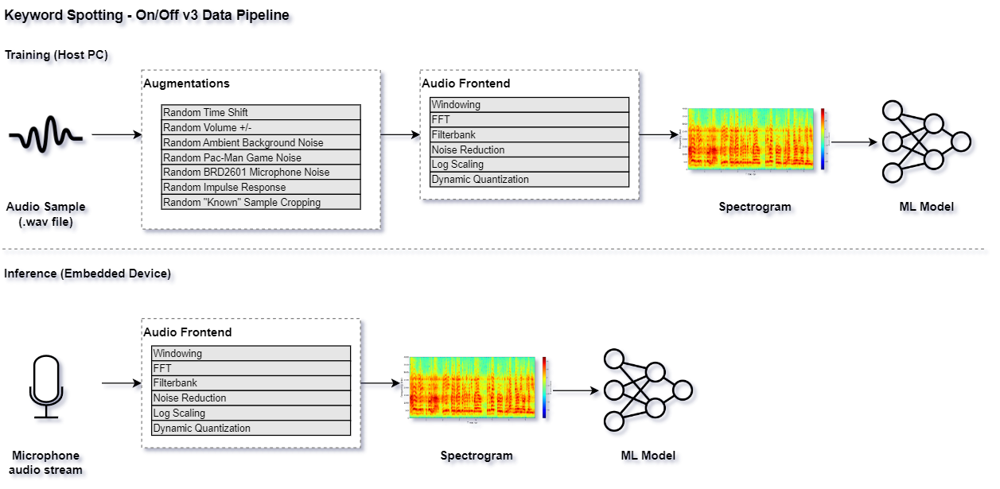

Keyword Spotting - On/Off¶
This tutorial describes how to use the MLTK to develop a machine learning model to detect the keywords:
On
Off
Quick Links¶
GitHub Source - View this tutorial on Github
Train in the “Cloud” - Vastly improve training times by training this model in the “cloud”
C++ Example Application - View this tutorial’s associated C++ example application
Machine Learning Model - View this tutorial’s associated machine learning model
Overview¶
Objectives¶
After completing this tutorial, you will have:
A better understanding of how keyword-spotting (KWS) machine learning models work
All of the tools needed to develop your own KWS machine learning model
A working demo to turn an LED on/off based on the voice commands of your choice
Content¶
This tutorial is divided into the following sections:
Running this tutorial from the command-line¶
While this tutorial uses a Jupyter Notebook, the recommended approach is to use your favorite text editor and standard command terminal, no Jupyter Notebook required.
See the Standard Python Package Installation guide for more details on how to enable the mltk command in your local terminal.
In this mode, when you encounter a !mltk command in this tutorial, the command should actually run in your local terminal (excluding the !)
Install MLTK Python Package¶
Before using the MLTK, it must first be installed.
See the Installation Guide for more details.
!pip install --upgrade silabs-mltk
All MLTK modeling operations are accessible via the mltk command.
Run the command mltk --help to ensure it is working.
NOTE: The exclamation point ! tells the Notebook to run a shell command, it is not required in a standard terminal
!mltk --help
Usage: mltk [OPTIONS] COMMAND [ARGS]...
Silicon Labs Machine Learning Toolkit
This is a Python package with command-line utilities and scripts to aid the
development of machine learning models for Silicon Lab's embedded platforms.
Options:
--version Display the version of this mltk package and exit
--help Show this message and exit.
Commands:
build MLTK build commands
classify_audio Classify keywords/events detected in a microphone's...
commander Silab's Commander Utility
custom Custom Model Operations
evaluate Evaluate a trained ML model
profile Profile a model
quantize Quantize a model into a .tflite file
summarize Generate a summary of a model
train Train an ML model
update_params Update the parameters of a previously trained model
utest Run the all unit tests
view View an interactive graph of the given model in a...
view_audio View the spectrograms generated by the...
Machine Learning and Keyword-Spotting Overview¶
Before continuing with this tutorial, it is recommended to review the following presentations:
MLTK Overview - An overview of the core concepts used by the this tutorial
Keyword Spotting Overview - An overview of how keyword spotting works
Dataset Selection and Preprocessing Parameters¶
Before starting the actual tutorial, let’s first discuss datasets.
TL;DR¶
A representative dataset must be acquired for the trained model to perform well in the real-world
Having a representative “unknown” class is critical; detecting the “known” classes is easy; rejecting everything else is hard.
The dataset should (typically) be transformed so that the model can efficiently learn the features of the dataset
Whatever transformations are used must be identical at training-time on the PC and run-time on the embedded device
The size of the dataset can be effectively increased by randomly augmenting it during training (changing the pitch, speed, adding background noise, etc.)
Acquire a Representative Dataset¶
The most critical aspect of any machine learning model is the dataset. A representative dataset is necessary to train a robust model. A model that is trained on a dataset that is too small and/or not representative of what would be seen in the real-world will likely not perform well.
In this tutorial, we want to create a keyword spotting classification machine learning model. This implies the following about the dataset:
The dataset must contain audio samples of the keywords we want to detect
The dataset must be labelled, i.e. each sample in the dataset must have an associated “class”, e.g. “on”, “off”
The dataset must be relatively large and representative to account for the variance in spoken language (accents, background noise, etc.)
For this tutorial, we’ll use the Google Speech Commands v2 dataset
(NOTE: This dataset is automatically downloaded in a later step in this tutorial).
This dataset is effectively a directory of sub-directories, and each sub-directory contains thousands of 1s audio clips.
The name of each sub-directory corresponds to the word being spoken in the audio clip, e.g:
/dataset
/dataset/on
/dataset/on/sample1.wav
/dataset/on/sample2.wav
...
/dataset/off
/dataset/off/sample1.wav
/dataset/off/sample2.wav
...
Synthetically Generated Dataset¶
The Google Speech Commands v2 is relatively small. The “on” and “off” classes only have about 3k samples. To create a robust model that works in the real-world, the dataset should have 10k+ samples (or even 100k+).
However, creating a large dataset can be expensive. To help overcome this, we use the AudioDatasetGenerator utility that comes with the MLTK. This is a utility that automatically generates audio samples using the Google, Amazon, and Microsoft clouds. Refer to the Synthetic Audio Dataset Generation tutorial for more details.
With this utility, we generate the Synthetic On/off Dataset which adds about 15k more samples to our training dataset.
Creating an “Unknown” Class¶
Creating a model that can detect the “known” classes (i.e. “on” and “off”) is relatively easy. Creating a model that can also reliably reject everything else is typically a much harder problem. For instance, consider that we are making a voice-controlled light switch that turns the lights on and off. In this case, the lights must only change with the keywords “on” and “off”. The switch must ignore all other sounds. (It would make for a poor user experience if the lights changed while having a conversation next to the switch.) This is why the “unknown” class is critical. The model should predict the “unknown” class for every other sound that is not a “known” class.
So to summarize:
Known classes - The keywords we want to detection (i.e. “on” and “off”)
Unknown class - Every other possible sound that might be heard in the field (silence, other words, random household noises, etc.)
To help create a representative “unknown” class, we use several datasets:
ML Commons Keywords - Multilingual Spoken Words Corpus is a large and growing audio dataset of spoken words in 50 languages
Environmental Sound Classification - Collection of 2k short clips comprising 50 classes of various common sound events
Dataset Summary¶
This model was trained using several different datasets:
mltk.datasets.audio.on_off - Synthetically generated keywords: on, off
mltk.datasets.audio.speech_commands_v2 - Human generated keywords: on, off
mltk.datasets.audio.mlcommons.ml_commons_keyword - Large collection of keywords, random subset used for unknown class
mltk.datasets.audio.background_noise.esc50 - Collection of various noises, random subset used for unknown class
mltk.datasets.audio.background_noise.ambient - Collection of various background noises, mixed into other samples for augmentation
mltk.datasets.audio.background_noise.brd2601 - “Silence” recorded by BRD2601 microphone, mixed into other samples to make them “sound” like they
mltk.datasets.audio.mit_ir_survey - Impulse responses that are randomly convolved with the samples. This makes the samples sound if they were recorded in different environments
Final note about the dataset¶
The combined datasets meet our requirements:
They contain audio samples of the keywords we want to detect (“on”, “off”)
The samples are labelled (all “on” samples are in the “on” sub-directory etc.)
The dataset is representative (the audio clips are taken from many different people saying the same words, as well as randomly audio samples for the “unknown” or “negative” class)
NOTE: For many machine learning applications acquiring a dataset will not be so easy. Many times the dataset will suffer from one or more of the following:
The dataset does not exist - Need to manually collect samples
The raw samples exist but are not “labeled” - Need to manually group the samples
The dataset is “dirty” - Bad/corrupt samples, mislabeled samples
The dataset is not representative - Duplicate/similar samples, not diverse enough to cover the possible range seen in the real-world
NOTE: A clean, representative dataset is one of the best ways to train a robust model. It is highly recommended to invest the time/energy to create a good dataset!
Feature Engineering¶
Along with a representative dataset, we (usually) need to transform the individual samples of the dataset so that the machine learning model can efficiently learn the “features” of the dataset, and thus make accurate predictions. This process is frequently called “feature engineering”. One way of describing feature engineering is: Use human insight to amplify the signals of the dataset so that a machine can more efficiently learn the patterns in it.
The transform(s) used for feature engineering are highly application-specific.
For this tutorial, we use the common technique of converting the raw audio into a spectrogram (i.e. gray-scale image). The machine learning model then learns the patterns in the spectrogram images that correspond to the keywords in the audio samples.
Featuring Engineering on the Edge¶
An important aspect to keep in mind about the transform(s) chosen for featuring engineering is that whatever is done to the dataset samples during training must also be done on the embedded device at run-time. i.e. The exact algorithms used to generate the spectrogram on the PC during training must be used on the embedded device at run-time. Any divergence will cause the embedded model to “see” different samples and likely not perform well (if at all).
For this purpose, the MLTK offers an Audio Feature Generator component. This component generates spectrograms from raw audio. The algorithms used in this component are accessible via:
MLTK Python API
Gecko SDK firmware component
In this way, the exact spectrogram generation algorithms used during training may also be used at run-time on the embedded device.
Refer to the Audio Feature Generator documentation and Audio Visualization section for more details on how the various parameters used to generate the spectrogram may be determined.
Data Augmentation¶
A useful technique for expanding the size of a dataset (and hopefully making it more representative) is to apply random augmentations to the training samples. For instance, audio dataset augmentations might include:
Increase/decrease speed
Increase/decrease pitch
Add random background noises
Applying an impulse response
Cropping “known” samples and adding to the “unknown” class
In this way, the model never “sees” the same sample during training which should hopefully make it robust as it has learned from a larger collection of samples.
Random Impulse Response¶
Another way of making an audio sample sound different is to apply an “impulse response” to it. The impulse response can make the audio sound as if it was captured in a different environment (e.g. in a church, in a field, etc.).
To do this, we randomly apply impulse responses from the MIT Impulse Response Survey
Random “unknown” samples by cropping “known” samples¶
On the device, audio is constantly streaming from the microphone. As such, there may be cases where the audio sample is only partially buffered when it is classified by the model. To account for this, the “known” samples are randomly cropped and applied to the “unknown” classes. This way, the model considers partially buffered “known” samples to be “unknown”.
Model Specification¶
The model specification is a standard Python script containing everything needed to build, train, and evaluate a machine learning model in the MLTK.
Refer to the Model Specification Guide for more details about this file.
The completed model specification used for this tutorial may be found on Github: keyword_spotting_on_off_v3.py.
It is recommended to copy & paste keyword_spotting_on_off_v3.py into your local MLTK Python environment
The following sub-sections provide code snippets from the keyword_spotting_on_off_v3.py model specification script:
Define Model Object¶
Near the top of the model specification script, are the lines:
# @mltk_model
class MyModel(
mltk_core.MltkModel, # We must inherit the MltkModel class
mltk_core.TrainMixin, # We also inherit the TrainMixin since we want to train this model
mltk_core.DatasetMixin, # We also need the DatasetMixin mixin to provide the relevant dataset properties
mltk_core.EvaluateClassifierMixin, # While not required, also inherit EvaluateClassifierMixin to help will generating evaluation stats for our classification model
):
pass
# Instantiate our custom model object
# The rest of this script simply configures the properties
# of our custom model object
my_model = MyModel()
This defines and instantiates a custom MltkModel object with several model “mixins”.
The custom model object must inherit the MltkModel object.
Additionally, it inherits:
TrainMixin so that we can train the model
DatasetMixin so that we get additional dataset properties
EvaluateClassifierMixin so that we can evaluate the trained model
The rest of the model specification script configures the various properties of our custom model object.
Configure the general model settings¶
# For better tracking, the version should be incremented any time a non-trivial change is made
# NOTE: The version is optional and not used directly used by the MLTK
my_model.version = 1
# Provide a brief description about what this model models
# This description goes in the "description" field of the .tflite model file
my_model.description = 'Keyword spotting classifier to detect: "on" and "off"'
Configure the basic training settings¶
Refer to the TrainMixin for more details about each property.
# This specifies the number of times we run the training.
# We just set this to a large value since we're using SteppedLearnRateScheduler
# to control when training completes
my_model.epochs = 9999
# Specify how many samples to pass through the model
# before updating the training gradients.
# Typical values are 10-64
# NOTE: Larger values require more memory and may not fit on your GPU
my_model.batch_size = 100
Configure the training callbacks¶
Refer to the TrainMixin for more details about each property.
# The MLTK enables the tf.keras.callbacks.ModelCheckpoint by default.
my_model.checkpoint['monitor'] = 'val_accuracy'
# We use a custom learn rate schedule that is defined in:
# https://github.com/google-research/google-research/tree/master/kws_streaming
my_model.train_callbacks = [
tf.keras.callbacks.TerminateOnNaN(),
SteppedLearnRateScheduler([
(100, .001),
(100, .002),
(100, .003),
(100, .004),
(10000, .005),
(10000, .002),
(5000, .0005),
(5000, 1e-5),
(5000, 1e-6),
(5000, 1e-7),
] )
]
Configure the TF-Lite Converter settings¶
The Tensorflow-Lite Converter is used to “quantize” the model.
The quantized model is what is eventually programmed to the embedded device.
Refer to the Model Quantization Guide for more details.
# These are the settings used to quantize the model
# We want all the internal ops as well as
# model input/output to be int8
my_model.tflite_converter['optimizations'] = [tf.lite.Optimize.DEFAULT]
my_model.tflite_converter['supported_ops'] = [tf.lite.OpsSet.TFLITE_BUILTINS_INT8]
my_model.tflite_converter['inference_input_type'] = np.int8
my_model.tflite_converter['inference_output_type'] = np.int8
# Automatically generate a representative dataset from the validation data
my_model.tflite_converter['representative_dataset'] = 'generate'
Define the model architecture¶
The model is based on the Temporal efficient neural network (TENet) model architecture.
A network for processing spectrogram data using temporal and depthwise convolutions. The network treats the [T, F] spectrogram as a timeseries shaped [T, 1, F].
This model was chosen because it has good accuracy for audio datasets and executes efficiently on the EFR32xG24 MCU.
More details at mltk.models.shared.tenet.TENet
def my_model_builder(model: MyModel) -> tf.keras.Model:
"""Build the Keras model
"""
input_shape = model.input_shape
# NOTE: This model requires the input shape: <time, 1, features>
# while the embedded device expects: <time, features, 1>
# Since the <time> axis is still row-major, we can swap the <features> with 1 without issue
time_size, feature_size, _ = input_shape
input_shape = (time_size, 1, feature_size)
keras_model = tenet.TENet12(
input_shape=input_shape,
classes=model.n_classes,
channels=50,
blocks=5,
)
keras_model.compile(
loss='categorical_crossentropy',
optimizer=tf.keras.optimizers.Adam(learning_rate=0.001, epsilon=1e-8),
metrics= ['accuracy']
)
return keras_model
my_model.build_model_function = my_model_builder
# TENet uses a custom layer, be sure to add it to the keras_custom_objects
# so that we can load the corresponding .h5 model file
my_model.keras_custom_objects['MultiScaleTemporalConvolution'] = tenet.MultiScaleTemporalConvolution
Audio Feature Generator Settings¶
This model uses the following Audio Feature Generator settings:
from mltk.core.preprocess.audio.audio_feature_generator import AudioFeatureGeneratorSettings
frontend_settings = AudioFeatureGeneratorSettings()
frontend_settings.sample_rate_hz = 16000
frontend_settings.sample_length_ms = 1000 # A 1s buffer should be enough to capture the keywords
frontend_settings.window_size_ms = 30
frontend_settings.window_step_ms = 10
frontend_settings.filterbank_n_channels = 104 # We want this value to be as large as possible
# while still allowing for the ML model to execute efficiently on the hardware
frontend_settings.filterbank_upper_band_limit = 7500.0
frontend_settings.filterbank_lower_band_limit = 125.0 # The dev board mic seems to have a lot of noise at lower frequencies
frontend_settings.noise_reduction_enable = True # Enable the noise reduction block to help ignore background noise in the field
frontend_settings.noise_reduction_smoothing_bits = 10
frontend_settings.noise_reduction_even_smoothing = 0.025
frontend_settings.noise_reduction_odd_smoothing = 0.06
frontend_settings.noise_reduction_min_signal_remaining = 0.40 # This value is fairly large (which makes the background noise reduction small)
# But it has been found to still give good results
# i.e. There is still some background noise reduction,
# but the actual signal is still (mostly) untouched
frontend_settings.dc_notch_filter_enable = True # Enable the DC notch filter, to help remove the DC signal from the dev board's mic
frontend_settings.dc_notch_filter_coefficient = 0.95
frontend_settings.quantize_dynamic_scale_enable = True # Enable dynamic quantization, this dynamically converts the uint16 spectrogram to int8
frontend_settings.quantize_dynamic_scale_range_db = 40.0
# Add the Audio Feature generator settings to the model parameters
# This way, they are included in the generated .tflite model file
# See https://siliconlabs.github.io/mltk/docs/guides/model_parameters.html
my_model.model_parameters.update(frontend_settings)
This uses a 16kHz sample rate which was found to give better performance at the expense of more RAM.
frontend_settings.sample_rate_hz = 16000
To help reduce the model computational complexity, only a 1000ms sample length is used.
frontend_settings.sample_length_ms = 1000
The idea here is that it only takes at most ~1000ms to say any of the keywords (i.e. the audio buffer needs to be large enough to hold the entire keyword but no larger).
This model uses a window size of 30ms and a step of 10ms.
frontend_settings.window_size_ms = 30
frontend_settings.window_step_ms = 10
These values were found experimentally using the Audio Visualizer Utility.
104 frequency bins are used to generate the spectrogram:
frontend_settings.filterbank_n_channels = 104
Increasing this value improves the resolution of spectrogram at the cost of model computational complexity (i.e. inference latency).
The noise reduction block is enabled but uses a fairly large min_signal_remaining:
frontend_settings.noise_reduction_enable = True
frontend_settings.noise_reduction_smoothing_bits = 10
frontend_settings.noise_reduction_even_smoothing = 0.025
frontend_settings.noise_reduction_odd_smoothing = 0.06
frontend_settings.noise_reduction_min_signal_remaining = 0.40
This helps to reduce background noise in the field.
NOTE: We also add padding to the audio samples during training to “warm up” the noise reduction block when generating the spectrogram using the
Audio Feature Generator. See the audio_pipeline_with_augmentations()
function in keyword_spotting_on_off_v3.py for more details.
The DC notch filter was enabled to help remove the DC component from the development board’s microphone:
frontend_settings.dc_notch_filter_enable = True # Enable the DC notch filter
frontend_settings.dc_notch_filter_coefficient = 0.95
Dynamic quantization was enabled to convert the generated spectrogram from uint16 to int8
frontend_settings.quantize_dynamic_scale_enable = True # Enable dynamic quantization
frontend_settings.quantize_dynamic_scale_range_db = 40.0
Configure the keywords to detect¶
This is likely the most interesting part of the model specification script. Here, we define which keywords we want our model to detect.
For this tutorial, we want to detect on and off, however,
you may modify this as necessary for your application. Be sure to generate a new Synthetic Dataset with the desired keywords.
# Add the keywords plus a _unknown_ meta class
my_model.classes = ['on', 'off', '_unknown_']
Data Pipeline¶
Refer to the audio_pipeline_with_augmentations()
function in keyword_spotting_on_off_v3.py for the full data pipeline used by this model.
This pipeline is illustrated as follows:

Audio Visualization¶
NOTE: This section is experimental and is optional for the rest of this tutorial. You may safely skip to the next section.
Before training the model, it is important that the generated spectrogram has enough detail from which the ML model can learn (i.e. “feature engineering”). The AudioFeatureGenerator has numerous settings to control how the spectrogram is generated.
For this purpose, the MLTK features an experimental command: view_audio which allows for visualizing a generated spectrogram in real-time as the various parameters are adjusted via GUI.
It also allows for adjusting the various augmentation parameters and listening to the audio playback.
See the Audio Feature Generator guide for more details.
NOTE: Internally, this command uses wxPython and must run locally. It will not work on a remote server (e.g. Colab).
# Invoke the view_audio command from a LOCAL terminal
# NOTE: Change this command to use
# "my_keyword_spotting_on_off" or whatever you called your model
!mltk view_audio keyword_spotting_on_off_v3
After running this command and playing with the GUI, you should have a better idea of what settings to use for the AudioFeatureGenerator and data augmentation parameters.
NOTE: Care should be given when selecting the spectrogram size. e.g. The dimensions given in the upper-left:

A larger spectrogram means a larger model input which ultimately means more processing that is required by the embedded device at run-time.
See the Model Optimization Tutorial for more details.
Model Parameters¶
As stated in the Feature Engineering on the Edge section, it is extremely important that whatever transforms are done to the dataset during training are also done at run-time on the embedded device.
To help with this, the MLTK allows for embedding parameters into the generated .tflite model file.
Refer to the Model Parameters Guide for more details about how this works.
This is useful for this tutorial as the MLTK will automatically embed all of the AudioFeatureGeneratorSettings into the generated .tflite model file.
Later, the Gecko SDK will read the settings from the .tflite model file when generating the project.
In this way, the AudioFeatureGenerator that runs on the embedded device will use the exact same settings.
NOTE: The mltk summarize --tflite command prints all the parameters that are embedded into the .tflite model file, including the AudioFeatureGenerator settings.
Model Summary¶
With the model specification complete, it is sometimes useful to generate a summary of the model before we spend the time to train it.
This can be done using the summarize command.
If you’re using a local terminal, navigate to the same directory are your model specification script, e.g. my_keyword_spotting_on_off_v3.py and modify the commands to use my_keyword_spotting_on_off_v3 or whatever you called your model.
NOTE: Since we have not trained our model yet, we must add the --build option to the command.
Once the model is trained, this option is not required.
# Summarize the Keras Model
# This is the non-quantized model used for training
# NOTE: Running this the first time may take awhile since the audio dataset needs to be downloaded
!mltk summarize keyword_spotting_on_off_v3 --build
Model: "TENet"
__________________________________________________________________________________________________
Layer (type) Output Shape Param # Connected to
==================================================================================================
input_1 (InputLayer) [(None, 98, 1, 104) 0 []
]
conv2d (Conv2D) (None, 98, 1, 50) 15650 ['input_1[0][0]']
pointwise_expand_conv-0 (Conv2 (None, 98, 1, 150) 7500 ['conv2d[0][0]']
D)
batch_normalization (BatchNorm (None, 98, 1, 150) 600 ['pointwise_expand_conv-0[0][0]']
alization)
re_lu (ReLU) (None, 98, 1, 150) 0 ['batch_normalization[0][0]']
mtconv-0 (MultiScaleTemporalCo (None, 49, 1, 150) 1350 ['re_lu[0][0]']
nvolution)
batch_normalization_1 (BatchNo (None, 49, 1, 150) 600 ['mtconv-0[0][0]']
rmalization)
re_lu_1 (ReLU) (None, 49, 1, 150) 0 ['batch_normalization_1[0][0]']
strided_residual-0 (Conv2D) (None, 49, 1, 50) 2500 ['conv2d[0][0]']
pointwise_contract_conv-0 (Con (None, 49, 1, 50) 7500 ['re_lu_1[0][0]']
v2D)
batch_normalization_3 (BatchNo (None, 49, 1, 50) 200 ['strided_residual-0[0][0]']
rmalization)
batch_normalization_2 (BatchNo (None, 49, 1, 50) 200 ['pointwise_contract_conv-0[0][0]
rmalization) ']
re_lu_2 (ReLU) (None, 49, 1, 50) 0 ['batch_normalization_3[0][0]']
add (Add) (None, 49, 1, 50) 0 ['batch_normalization_2[0][0]',
're_lu_2[0][0]']
re_lu_3 (ReLU) (None, 49, 1, 50) 0 ['add[0][0]']
pointwise_expand_conv-1 (Conv2 (None, 49, 1, 150) 7500 ['re_lu_3[0][0]']
D)
batch_normalization_4 (BatchNo (None, 49, 1, 150) 600 ['pointwise_expand_conv-1[0][0]']
rmalization)
re_lu_4 (ReLU) (None, 49, 1, 150) 0 ['batch_normalization_4[0][0]']
mtconv-1 (MultiScaleTemporalCo (None, 49, 1, 150) 1350 ['re_lu_4[0][0]']
nvolution)
batch_normalization_5 (BatchNo (None, 49, 1, 150) 600 ['mtconv-1[0][0]']
rmalization)
re_lu_5 (ReLU) (None, 49, 1, 150) 0 ['batch_normalization_5[0][0]']
pointwise_contract_conv-1 (Con (None, 49, 1, 50) 7500 ['re_lu_5[0][0]']
v2D)
batch_normalization_6 (BatchNo (None, 49, 1, 50) 200 ['pointwise_contract_conv-1[0][0]
rmalization) ']
add_1 (Add) (None, 49, 1, 50) 0 ['batch_normalization_6[0][0]',
're_lu_3[0][0]']
re_lu_6 (ReLU) (None, 49, 1, 50) 0 ['add_1[0][0]']
pointwise_expand_conv-2 (Conv2 (None, 49, 1, 150) 7500 ['re_lu_6[0][0]']
D)
batch_normalization_7 (BatchNo (None, 49, 1, 150) 600 ['pointwise_expand_conv-2[0][0]']
rmalization)
re_lu_7 (ReLU) (None, 49, 1, 150) 0 ['batch_normalization_7[0][0]']
mtconv-2 (MultiScaleTemporalCo (None, 49, 1, 150) 1350 ['re_lu_7[0][0]']
nvolution)
batch_normalization_8 (BatchNo (None, 49, 1, 150) 600 ['mtconv-2[0][0]']
rmalization)
re_lu_8 (ReLU) (None, 49, 1, 150) 0 ['batch_normalization_8[0][0]']
pointwise_contract_conv-2 (Con (None, 49, 1, 50) 7500 ['re_lu_8[0][0]']
v2D)
batch_normalization_9 (BatchNo (None, 49, 1, 50) 200 ['pointwise_contract_conv-2[0][0]
rmalization) ']
add_2 (Add) (None, 49, 1, 50) 0 ['batch_normalization_9[0][0]',
're_lu_6[0][0]']
re_lu_9 (ReLU) (None, 49, 1, 50) 0 ['add_2[0][0]']
pointwise_expand_conv-3 (Conv2 (None, 49, 1, 150) 7500 ['re_lu_9[0][0]']
D)
batch_normalization_10 (BatchN (None, 49, 1, 150) 600 ['pointwise_expand_conv-3[0][0]']
ormalization)
re_lu_10 (ReLU) (None, 49, 1, 150) 0 ['batch_normalization_10[0][0]']
mtconv-3 (MultiScaleTemporalCo (None, 49, 1, 150) 1350 ['re_lu_10[0][0]']
nvolution)
batch_normalization_11 (BatchN (None, 49, 1, 150) 600 ['mtconv-3[0][0]']
ormalization)
re_lu_11 (ReLU) (None, 49, 1, 150) 0 ['batch_normalization_11[0][0]']
pointwise_contract_conv-3 (Con (None, 49, 1, 50) 7500 ['re_lu_11[0][0]']
v2D)
batch_normalization_12 (BatchN (None, 49, 1, 50) 200 ['pointwise_contract_conv-3[0][0]
ormalization) ']
add_3 (Add) (None, 49, 1, 50) 0 ['batch_normalization_12[0][0]',
're_lu_9[0][0]']
re_lu_12 (ReLU) (None, 49, 1, 50) 0 ['add_3[0][0]']
pointwise_expand_conv-4 (Conv2 (None, 49, 1, 150) 7500 ['re_lu_12[0][0]']
D)
batch_normalization_13 (BatchN (None, 49, 1, 150) 600 ['pointwise_expand_conv-4[0][0]']
ormalization)
re_lu_13 (ReLU) (None, 49, 1, 150) 0 ['batch_normalization_13[0][0]']
mtconv-4 (MultiScaleTemporalCo (None, 25, 1, 150) 1350 ['re_lu_13[0][0]']
nvolution)
batch_normalization_14 (BatchN (None, 25, 1, 150) 600 ['mtconv-4[0][0]']
ormalization)
re_lu_14 (ReLU) (None, 25, 1, 150) 0 ['batch_normalization_14[0][0]']
strided_residual-4 (Conv2D) (None, 25, 1, 50) 2500 ['re_lu_12[0][0]']
pointwise_contract_conv-4 (Con (None, 25, 1, 50) 7500 ['re_lu_14[0][0]']
v2D)
batch_normalization_16 (BatchN (None, 25, 1, 50) 200 ['strided_residual-4[0][0]']
ormalization)
batch_normalization_15 (BatchN (None, 25, 1, 50) 200 ['pointwise_contract_conv-4[0][0]
ormalization) ']
re_lu_15 (ReLU) (None, 25, 1, 50) 0 ['batch_normalization_16[0][0]']
add_4 (Add) (None, 25, 1, 50) 0 ['batch_normalization_15[0][0]',
're_lu_15[0][0]']
re_lu_16 (ReLU) (None, 25, 1, 50) 0 ['add_4[0][0]']
pointwise_expand_conv-5 (Conv2 (None, 25, 1, 150) 7500 ['re_lu_16[0][0]']
D)
batch_normalization_17 (BatchN (None, 25, 1, 150) 600 ['pointwise_expand_conv-5[0][0]']
ormalization)
re_lu_17 (ReLU) (None, 25, 1, 150) 0 ['batch_normalization_17[0][0]']
mtconv-5 (MultiScaleTemporalCo (None, 25, 1, 150) 1350 ['re_lu_17[0][0]']
nvolution)
batch_normalization_18 (BatchN (None, 25, 1, 150) 600 ['mtconv-5[0][0]']
ormalization)
re_lu_18 (ReLU) (None, 25, 1, 150) 0 ['batch_normalization_18[0][0]']
pointwise_contract_conv-5 (Con (None, 25, 1, 50) 7500 ['re_lu_18[0][0]']
v2D)
batch_normalization_19 (BatchN (None, 25, 1, 50) 200 ['pointwise_contract_conv-5[0][0]
ormalization) ']
add_5 (Add) (None, 25, 1, 50) 0 ['batch_normalization_19[0][0]',
're_lu_16[0][0]']
re_lu_19 (ReLU) (None, 25, 1, 50) 0 ['add_5[0][0]']
pointwise_expand_conv-6 (Conv2 (None, 25, 1, 150) 7500 ['re_lu_19[0][0]']
D)
batch_normalization_20 (BatchN (None, 25, 1, 150) 600 ['pointwise_expand_conv-6[0][0]']
ormalization)
re_lu_20 (ReLU) (None, 25, 1, 150) 0 ['batch_normalization_20[0][0]']
mtconv-6 (MultiScaleTemporalCo (None, 25, 1, 150) 1350 ['re_lu_20[0][0]']
nvolution)
batch_normalization_21 (BatchN (None, 25, 1, 150) 600 ['mtconv-6[0][0]']
ormalization)
re_lu_21 (ReLU) (None, 25, 1, 150) 0 ['batch_normalization_21[0][0]']
pointwise_contract_conv-6 (Con (None, 25, 1, 50) 7500 ['re_lu_21[0][0]']
v2D)
batch_normalization_22 (BatchN (None, 25, 1, 50) 200 ['pointwise_contract_conv-6[0][0]
ormalization) ']
add_6 (Add) (None, 25, 1, 50) 0 ['batch_normalization_22[0][0]',
're_lu_19[0][0]']
re_lu_22 (ReLU) (None, 25, 1, 50) 0 ['add_6[0][0]']
pointwise_expand_conv-7 (Conv2 (None, 25, 1, 150) 7500 ['re_lu_22[0][0]']
D)
batch_normalization_23 (BatchN (None, 25, 1, 150) 600 ['pointwise_expand_conv-7[0][0]']
ormalization)
re_lu_23 (ReLU) (None, 25, 1, 150) 0 ['batch_normalization_23[0][0]']
mtconv-7 (MultiScaleTemporalCo (None, 25, 1, 150) 1350 ['re_lu_23[0][0]']
nvolution)
batch_normalization_24 (BatchN (None, 25, 1, 150) 600 ['mtconv-7[0][0]']
ormalization)
re_lu_24 (ReLU) (None, 25, 1, 150) 0 ['batch_normalization_24[0][0]']
pointwise_contract_conv-7 (Con (None, 25, 1, 50) 7500 ['re_lu_24[0][0]']
v2D)
batch_normalization_25 (BatchN (None, 25, 1, 50) 200 ['pointwise_contract_conv-7[0][0]
ormalization) ']
add_7 (Add) (None, 25, 1, 50) 0 ['batch_normalization_25[0][0]',
're_lu_22[0][0]']
re_lu_25 (ReLU) (None, 25, 1, 50) 0 ['add_7[0][0]']
pointwise_expand_conv-8 (Conv2 (None, 25, 1, 150) 7500 ['re_lu_25[0][0]']
D)
batch_normalization_26 (BatchN (None, 25, 1, 150) 600 ['pointwise_expand_conv-8[0][0]']
ormalization)
re_lu_26 (ReLU) (None, 25, 1, 150) 0 ['batch_normalization_26[0][0]']
mtconv-8 (MultiScaleTemporalCo (None, 13, 1, 150) 1350 ['re_lu_26[0][0]']
nvolution)
batch_normalization_27 (BatchN (None, 13, 1, 150) 600 ['mtconv-8[0][0]']
ormalization)
re_lu_27 (ReLU) (None, 13, 1, 150) 0 ['batch_normalization_27[0][0]']
strided_residual-8 (Conv2D) (None, 13, 1, 50) 2500 ['re_lu_25[0][0]']
pointwise_contract_conv-8 (Con (None, 13, 1, 50) 7500 ['re_lu_27[0][0]']
v2D)
batch_normalization_29 (BatchN (None, 13, 1, 50) 200 ['strided_residual-8[0][0]']
ormalization)
batch_normalization_28 (BatchN (None, 13, 1, 50) 200 ['pointwise_contract_conv-8[0][0]
ormalization) ']
re_lu_28 (ReLU) (None, 13, 1, 50) 0 ['batch_normalization_29[0][0]']
add_8 (Add) (None, 13, 1, 50) 0 ['batch_normalization_28[0][0]',
're_lu_28[0][0]']
re_lu_29 (ReLU) (None, 13, 1, 50) 0 ['add_8[0][0]']
pointwise_expand_conv-9 (Conv2 (None, 13, 1, 150) 7500 ['re_lu_29[0][0]']
D)
batch_normalization_30 (BatchN (None, 13, 1, 150) 600 ['pointwise_expand_conv-9[0][0]']
ormalization)
re_lu_30 (ReLU) (None, 13, 1, 150) 0 ['batch_normalization_30[0][0]']
mtconv-9 (MultiScaleTemporalCo (None, 13, 1, 150) 1350 ['re_lu_30[0][0]']
nvolution)
batch_normalization_31 (BatchN (None, 13, 1, 150) 600 ['mtconv-9[0][0]']
ormalization)
re_lu_31 (ReLU) (None, 13, 1, 150) 0 ['batch_normalization_31[0][0]']
pointwise_contract_conv-9 (Con (None, 13, 1, 50) 7500 ['re_lu_31[0][0]']
v2D)
batch_normalization_32 (BatchN (None, 13, 1, 50) 200 ['pointwise_contract_conv-9[0][0]
ormalization) ']
add_9 (Add) (None, 13, 1, 50) 0 ['batch_normalization_32[0][0]',
're_lu_29[0][0]']
re_lu_32 (ReLU) (None, 13, 1, 50) 0 ['add_9[0][0]']
pointwise_expand_conv-10 (Conv (None, 13, 1, 150) 7500 ['re_lu_32[0][0]']
2D)
batch_normalization_33 (BatchN (None, 13, 1, 150) 600 ['pointwise_expand_conv-10[0][0]'
ormalization) ]
re_lu_33 (ReLU) (None, 13, 1, 150) 0 ['batch_normalization_33[0][0]']
mtconv-10 (MultiScaleTemporalC (None, 13, 1, 150) 1350 ['re_lu_33[0][0]']
onvolution)
batch_normalization_34 (BatchN (None, 13, 1, 150) 600 ['mtconv-10[0][0]']
ormalization)
re_lu_34 (ReLU) (None, 13, 1, 150) 0 ['batch_normalization_34[0][0]']
pointwise_contract_conv-10 (Co (None, 13, 1, 50) 7500 ['re_lu_34[0][0]']
nv2D)
batch_normalization_35 (BatchN (None, 13, 1, 50) 200 ['pointwise_contract_conv-10[0][0
ormalization) ]']
add_10 (Add) (None, 13, 1, 50) 0 ['batch_normalization_35[0][0]',
're_lu_32[0][0]']
re_lu_35 (ReLU) (None, 13, 1, 50) 0 ['add_10[0][0]']
pointwise_expand_conv-11 (Conv (None, 13, 1, 150) 7500 ['re_lu_35[0][0]']
2D)
batch_normalization_36 (BatchN (None, 13, 1, 150) 600 ['pointwise_expand_conv-11[0][0]'
ormalization) ]
re_lu_36 (ReLU) (None, 13, 1, 150) 0 ['batch_normalization_36[0][0]']
mtconv-11 (MultiScaleTemporalC (None, 13, 1, 150) 1350 ['re_lu_36[0][0]']
onvolution)
batch_normalization_37 (BatchN (None, 13, 1, 150) 600 ['mtconv-11[0][0]']
ormalization)
re_lu_37 (ReLU) (None, 13, 1, 150) 0 ['batch_normalization_37[0][0]']
pointwise_contract_conv-11 (Co (None, 13, 1, 50) 7500 ['re_lu_37[0][0]']
nv2D)
batch_normalization_38 (BatchN (None, 13, 1, 50) 200 ['pointwise_contract_conv-11[0][0
ormalization) ]']
add_11 (Add) (None, 13, 1, 50) 0 ['batch_normalization_38[0][0]',
're_lu_35[0][0]']
re_lu_38 (ReLU) (None, 13, 1, 50) 0 ['add_11[0][0]']
pointwise_expand_conv-12 (Conv (None, 13, 1, 150) 7500 ['re_lu_38[0][0]']
2D)
batch_normalization_39 (BatchN (None, 13, 1, 150) 600 ['pointwise_expand_conv-12[0][0]'
ormalization) ]
re_lu_39 (ReLU) (None, 13, 1, 150) 0 ['batch_normalization_39[0][0]']
mtconv-12 (MultiScaleTemporalC (None, 7, 1, 150) 1350 ['re_lu_39[0][0]']
onvolution)
batch_normalization_40 (BatchN (None, 7, 1, 150) 600 ['mtconv-12[0][0]']
ormalization)
re_lu_40 (ReLU) (None, 7, 1, 150) 0 ['batch_normalization_40[0][0]']
strided_residual-12 (Conv2D) (None, 7, 1, 50) 2500 ['re_lu_38[0][0]']
pointwise_contract_conv-12 (Co (None, 7, 1, 50) 7500 ['re_lu_40[0][0]']
nv2D)
batch_normalization_42 (BatchN (None, 7, 1, 50) 200 ['strided_residual-12[0][0]']
ormalization)
batch_normalization_41 (BatchN (None, 7, 1, 50) 200 ['pointwise_contract_conv-12[0][0
ormalization) ]']
re_lu_41 (ReLU) (None, 7, 1, 50) 0 ['batch_normalization_42[0][0]']
add_12 (Add) (None, 7, 1, 50) 0 ['batch_normalization_41[0][0]',
're_lu_41[0][0]']
re_lu_42 (ReLU) (None, 7, 1, 50) 0 ['add_12[0][0]']
pointwise_expand_conv-13 (Conv (None, 7, 1, 150) 7500 ['re_lu_42[0][0]']
2D)
batch_normalization_43 (BatchN (None, 7, 1, 150) 600 ['pointwise_expand_conv-13[0][0]'
ormalization) ]
re_lu_43 (ReLU) (None, 7, 1, 150) 0 ['batch_normalization_43[0][0]']
mtconv-13 (MultiScaleTemporalC (None, 7, 1, 150) 1350 ['re_lu_43[0][0]']
onvolution)
batch_normalization_44 (BatchN (None, 7, 1, 150) 600 ['mtconv-13[0][0]']
ormalization)
re_lu_44 (ReLU) (None, 7, 1, 150) 0 ['batch_normalization_44[0][0]']
pointwise_contract_conv-13 (Co (None, 7, 1, 50) 7500 ['re_lu_44[0][0]']
nv2D)
batch_normalization_45 (BatchN (None, 7, 1, 50) 200 ['pointwise_contract_conv-13[0][0
ormalization) ]']
add_13 (Add) (None, 7, 1, 50) 0 ['batch_normalization_45[0][0]',
're_lu_42[0][0]']
re_lu_45 (ReLU) (None, 7, 1, 50) 0 ['add_13[0][0]']
pointwise_expand_conv-14 (Conv (None, 7, 1, 150) 7500 ['re_lu_45[0][0]']
2D)
batch_normalization_46 (BatchN (None, 7, 1, 150) 600 ['pointwise_expand_conv-14[0][0]'
ormalization) ]
re_lu_46 (ReLU) (None, 7, 1, 150) 0 ['batch_normalization_46[0][0]']
mtconv-14 (MultiScaleTemporalC (None, 7, 1, 150) 1350 ['re_lu_46[0][0]']
onvolution)
batch_normalization_47 (BatchN (None, 7, 1, 150) 600 ['mtconv-14[0][0]']
ormalization)
re_lu_47 (ReLU) (None, 7, 1, 150) 0 ['batch_normalization_47[0][0]']
pointwise_contract_conv-14 (Co (None, 7, 1, 50) 7500 ['re_lu_47[0][0]']
nv2D)
batch_normalization_48 (BatchN (None, 7, 1, 50) 200 ['pointwise_contract_conv-14[0][0
ormalization) ]']
add_14 (Add) (None, 7, 1, 50) 0 ['batch_normalization_48[0][0]',
're_lu_45[0][0]']
re_lu_48 (ReLU) (None, 7, 1, 50) 0 ['add_14[0][0]']
pointwise_expand_conv-15 (Conv (None, 7, 1, 150) 7500 ['re_lu_48[0][0]']
2D)
batch_normalization_49 (BatchN (None, 7, 1, 150) 600 ['pointwise_expand_conv-15[0][0]'
ormalization) ]
re_lu_49 (ReLU) (None, 7, 1, 150) 0 ['batch_normalization_49[0][0]']
mtconv-15 (MultiScaleTemporalC (None, 7, 1, 150) 1350 ['re_lu_49[0][0]']
onvolution)
batch_normalization_50 (BatchN (None, 7, 1, 150) 600 ['mtconv-15[0][0]']
ormalization)
re_lu_50 (ReLU) (None, 7, 1, 150) 0 ['batch_normalization_50[0][0]']
pointwise_contract_conv-15 (Co (None, 7, 1, 50) 7500 ['re_lu_50[0][0]']
nv2D)
batch_normalization_51 (BatchN (None, 7, 1, 50) 200 ['pointwise_contract_conv-15[0][0
ormalization) ]']
add_15 (Add) (None, 7, 1, 50) 0 ['batch_normalization_51[0][0]',
're_lu_48[0][0]']
re_lu_51 (ReLU) (None, 7, 1, 50) 0 ['add_15[0][0]']
pointwise_expand_conv-16 (Conv (None, 7, 1, 150) 7500 ['re_lu_51[0][0]']
2D)
batch_normalization_52 (BatchN (None, 7, 1, 150) 600 ['pointwise_expand_conv-16[0][0]'
ormalization) ]
re_lu_52 (ReLU) (None, 7, 1, 150) 0 ['batch_normalization_52[0][0]']
mtconv-16 (MultiScaleTemporalC (None, 4, 1, 150) 1350 ['re_lu_52[0][0]']
onvolution)
batch_normalization_53 (BatchN (None, 4, 1, 150) 600 ['mtconv-16[0][0]']
ormalization)
re_lu_53 (ReLU) (None, 4, 1, 150) 0 ['batch_normalization_53[0][0]']
strided_residual-16 (Conv2D) (None, 4, 1, 50) 2500 ['re_lu_51[0][0]']
pointwise_contract_conv-16 (Co (None, 4, 1, 50) 7500 ['re_lu_53[0][0]']
nv2D)
batch_normalization_55 (BatchN (None, 4, 1, 50) 200 ['strided_residual-16[0][0]']
ormalization)
batch_normalization_54 (BatchN (None, 4, 1, 50) 200 ['pointwise_contract_conv-16[0][0
ormalization) ]']
re_lu_54 (ReLU) (None, 4, 1, 50) 0 ['batch_normalization_55[0][0]']
add_16 (Add) (None, 4, 1, 50) 0 ['batch_normalization_54[0][0]',
're_lu_54[0][0]']
re_lu_55 (ReLU) (None, 4, 1, 50) 0 ['add_16[0][0]']
pointwise_expand_conv-17 (Conv (None, 4, 1, 150) 7500 ['re_lu_55[0][0]']
2D)
batch_normalization_56 (BatchN (None, 4, 1, 150) 600 ['pointwise_expand_conv-17[0][0]'
ormalization) ]
re_lu_56 (ReLU) (None, 4, 1, 150) 0 ['batch_normalization_56[0][0]']
mtconv-17 (MultiScaleTemporalC (None, 4, 1, 150) 1350 ['re_lu_56[0][0]']
onvolution)
batch_normalization_57 (BatchN (None, 4, 1, 150) 600 ['mtconv-17[0][0]']
ormalization)
re_lu_57 (ReLU) (None, 4, 1, 150) 0 ['batch_normalization_57[0][0]']
pointwise_contract_conv-17 (Co (None, 4, 1, 50) 7500 ['re_lu_57[0][0]']
nv2D)
batch_normalization_58 (BatchN (None, 4, 1, 50) 200 ['pointwise_contract_conv-17[0][0
ormalization) ]']
add_17 (Add) (None, 4, 1, 50) 0 ['batch_normalization_58[0][0]',
're_lu_55[0][0]']
re_lu_58 (ReLU) (None, 4, 1, 50) 0 ['add_17[0][0]']
pointwise_expand_conv-18 (Conv (None, 4, 1, 150) 7500 ['re_lu_58[0][0]']
2D)
batch_normalization_59 (BatchN (None, 4, 1, 150) 600 ['pointwise_expand_conv-18[0][0]'
ormalization) ]
re_lu_59 (ReLU) (None, 4, 1, 150) 0 ['batch_normalization_59[0][0]']
mtconv-18 (MultiScaleTemporalC (None, 4, 1, 150) 1350 ['re_lu_59[0][0]']
onvolution)
batch_normalization_60 (BatchN (None, 4, 1, 150) 600 ['mtconv-18[0][0]']
ormalization)
re_lu_60 (ReLU) (None, 4, 1, 150) 0 ['batch_normalization_60[0][0]']
pointwise_contract_conv-18 (Co (None, 4, 1, 50) 7500 ['re_lu_60[0][0]']
nv2D)
batch_normalization_61 (BatchN (None, 4, 1, 50) 200 ['pointwise_contract_conv-18[0][0
ormalization) ]']
add_18 (Add) (None, 4, 1, 50) 0 ['batch_normalization_61[0][0]',
're_lu_58[0][0]']
re_lu_61 (ReLU) (None, 4, 1, 50) 0 ['add_18[0][0]']
pointwise_expand_conv-19 (Conv (None, 4, 1, 150) 7500 ['re_lu_61[0][0]']
2D)
batch_normalization_62 (BatchN (None, 4, 1, 150) 600 ['pointwise_expand_conv-19[0][0]'
ormalization) ]
re_lu_62 (ReLU) (None, 4, 1, 150) 0 ['batch_normalization_62[0][0]']
mtconv-19 (MultiScaleTemporalC (None, 4, 1, 150) 1350 ['re_lu_62[0][0]']
onvolution)
batch_normalization_63 (BatchN (None, 4, 1, 150) 600 ['mtconv-19[0][0]']
ormalization)
re_lu_63 (ReLU) (None, 4, 1, 150) 0 ['batch_normalization_63[0][0]']
pointwise_contract_conv-19 (Co (None, 4, 1, 50) 7500 ['re_lu_63[0][0]']
nv2D)
batch_normalization_64 (BatchN (None, 4, 1, 50) 200 ['pointwise_contract_conv-19[0][0
ormalization) ]']
add_19 (Add) (None, 4, 1, 50) 0 ['batch_normalization_64[0][0]',
're_lu_61[0][0]']
re_lu_64 (ReLU) (None, 4, 1, 50) 0 ['add_19[0][0]']
average_pooling2d (AveragePool (None, 1, 1, 50) 0 ['re_lu_64[0][0]']
ing2D)
flatten (Flatten) (None, 50) 0 ['average_pooling2d[0][0]']
dropout (Dropout) (None, 50) 0 ['flatten[0][0]']
dense (Dense) (None, 3) 153 ['dropout[0][0]']
==================================================================================================
Total params: 384,303
Trainable params: 369,803
Non-trainable params: 14,500
__________________________________________________________________________________________________
Total MACs: 8.359 M
Total OPs: 17.055 M
Name: keyword_spotting_on_off_v3
Version: 1
Description: Keyword spotting classifier to detect: on, off
Classes: on, off, _unknown_
fe.sample_rate_hz: 16000
fe.fft_length: 512
fe.sample_length_ms: 1000
fe.window_size_ms: 30
fe.window_step_ms: 10
fe.filterbank_n_channels: 104
fe.filterbank_upper_band_limit: 7500.0
fe.filterbank_lower_band_limit: 125.0
fe.noise_reduction_enable: True
fe.noise_reduction_smoothing_bits: 10
fe.noise_reduction_even_smoothing: 0.025
fe.noise_reduction_odd_smoothing: 0.06
fe.noise_reduction_min_signal_remaining: 0.4
fe.pcan_enable: False
fe.pcan_strength: 0.95
fe.pcan_offset: 80.0
fe.pcan_gain_bits: 21
fe.log_scale_enable: True
fe.log_scale_shift: 6
fe.activity_detection_enable: False
fe.activity_detection_alpha_a: 0.5
fe.activity_detection_alpha_b: 0.8
fe.activity_detection_arm_threshold: 0.75
fe.activity_detection_trip_threshold: 0.8
fe.dc_notch_filter_enable: True
fe.dc_notch_filter_coefficient: 0.95
fe.quantize_dynamic_scale_enable: True
fe.quantize_dynamic_scale_range_db: 40.0
average_window_duration_ms: 300
detection_threshold_list: [242, 242, 255]
suppression_ms: 700
minimum_count: 2
volume_gain: 0.0
latency_ms: 10
verbose_model_output_logs: False
# Summarize the TF-Lite Model
# This is the quantized model that eventually goes on the embedded device
!mltk summarize keyword_spotting_on_off_v3 --tflite --build
+-------+-------------------+-----------------+-----------------+------------------------------------------------------+
| Index | OpCode | Input(s) | Output(s) | Config |
+-------+-------------------+-----------------+-----------------+------------------------------------------------------+
| 0 | conv_2d | 98x1x104 (int8) | 98x1x50 (int8) | Padding:Same stride:1x1 activation:None |
| | | 3x1x104 (int8) | | |
| | | 50 (int32) | | |
| 1 | conv_2d | 98x1x50 (int8) | 98x1x150 (int8) | Padding:Valid stride:1x1 activation:Relu |
| | | 1x1x50 (int8) | | |
| | | 150 (int32) | | |
| 2 | depthwise_conv_2d | 98x1x150 (int8) | 49x1x150 (int8) | Multiplier:1 padding:Same stride:2x2 activation:Relu |
| | | 9x1x150 (int8) | | |
| | | 150 (int32) | | |
| 3 | conv_2d | 49x1x150 (int8) | 49x1x50 (int8) | Padding:Valid stride:1x1 activation:None |
| | | 1x1x150 (int8) | | |
| | | 50 (int32) | | |
| 4 | conv_2d | 98x1x50 (int8) | 49x1x50 (int8) | Padding:Same stride:2x2 activation:Relu |
| | | 1x1x50 (int8) | | |
| | | 50 (int32) | | |
| 5 | add | 49x1x50 (int8) | 49x1x50 (int8) | Activation:Relu |
| | | 49x1x50 (int8) | | |
| 6 | conv_2d | 49x1x50 (int8) | 49x1x150 (int8) | Padding:Valid stride:1x1 activation:Relu |
| | | 1x1x50 (int8) | | |
| | | 150 (int32) | | |
| 7 | depthwise_conv_2d | 49x1x150 (int8) | 49x1x150 (int8) | Multiplier:1 padding:Same stride:1x1 activation:Relu |
| | | 9x1x150 (int8) | | |
| | | 150 (int32) | | |
| 8 | conv_2d | 49x1x150 (int8) | 49x1x50 (int8) | Padding:Valid stride:1x1 activation:None |
| | | 1x1x150 (int8) | | |
| | | 50 (int32) | | |
| 9 | add | 49x1x50 (int8) | 49x1x50 (int8) | Activation:Relu |
| | | 49x1x50 (int8) | | |
| 10 | conv_2d | 49x1x50 (int8) | 49x1x150 (int8) | Padding:Valid stride:1x1 activation:Relu |
| | | 1x1x50 (int8) | | |
| | | 150 (int32) | | |
| 11 | depthwise_conv_2d | 49x1x150 (int8) | 49x1x150 (int8) | Multiplier:1 padding:Same stride:1x1 activation:Relu |
| | | 9x1x150 (int8) | | |
| | | 150 (int32) | | |
| 12 | conv_2d | 49x1x150 (int8) | 49x1x50 (int8) | Padding:Valid stride:1x1 activation:None |
| | | 1x1x150 (int8) | | |
| | | 50 (int32) | | |
| 13 | add | 49x1x50 (int8) | 49x1x50 (int8) | Activation:Relu |
| | | 49x1x50 (int8) | | |
| 14 | conv_2d | 49x1x50 (int8) | 49x1x150 (int8) | Padding:Valid stride:1x1 activation:Relu |
| | | 1x1x50 (int8) | | |
| | | 150 (int32) | | |
| 15 | depthwise_conv_2d | 49x1x150 (int8) | 49x1x150 (int8) | Multiplier:1 padding:Same stride:1x1 activation:Relu |
| | | 9x1x150 (int8) | | |
| | | 150 (int32) | | |
| 16 | conv_2d | 49x1x150 (int8) | 49x1x50 (int8) | Padding:Valid stride:1x1 activation:None |
| | | 1x1x150 (int8) | | |
| | | 50 (int32) | | |
| 17 | add | 49x1x50 (int8) | 49x1x50 (int8) | Activation:Relu |
| | | 49x1x50 (int8) | | |
| 18 | conv_2d | 49x1x50 (int8) | 49x1x150 (int8) | Padding:Valid stride:1x1 activation:Relu |
| | | 1x1x50 (int8) | | |
| | | 150 (int32) | | |
| 19 | depthwise_conv_2d | 49x1x150 (int8) | 25x1x150 (int8) | Multiplier:1 padding:Same stride:2x2 activation:Relu |
| | | 9x1x150 (int8) | | |
| | | 150 (int32) | | |
| 20 | conv_2d | 25x1x150 (int8) | 25x1x50 (int8) | Padding:Valid stride:1x1 activation:None |
| | | 1x1x150 (int8) | | |
| | | 50 (int32) | | |
| 21 | conv_2d | 49x1x50 (int8) | 25x1x50 (int8) | Padding:Same stride:2x2 activation:Relu |
| | | 1x1x50 (int8) | | |
| | | 50 (int32) | | |
| 22 | add | 25x1x50 (int8) | 25x1x50 (int8) | Activation:Relu |
| | | 25x1x50 (int8) | | |
| 23 | conv_2d | 25x1x50 (int8) | 25x1x150 (int8) | Padding:Valid stride:1x1 activation:Relu |
| | | 1x1x50 (int8) | | |
| | | 150 (int32) | | |
| 24 | depthwise_conv_2d | 25x1x150 (int8) | 25x1x150 (int8) | Multiplier:1 padding:Same stride:1x1 activation:Relu |
| | | 9x1x150 (int8) | | |
| | | 150 (int32) | | |
| 25 | conv_2d | 25x1x150 (int8) | 25x1x50 (int8) | Padding:Valid stride:1x1 activation:None |
| | | 1x1x150 (int8) | | |
| | | 50 (int32) | | |
| 26 | add | 25x1x50 (int8) | 25x1x50 (int8) | Activation:Relu |
| | | 25x1x50 (int8) | | |
| 27 | conv_2d | 25x1x50 (int8) | 25x1x150 (int8) | Padding:Valid stride:1x1 activation:Relu |
| | | 1x1x50 (int8) | | |
| | | 150 (int32) | | |
| 28 | depthwise_conv_2d | 25x1x150 (int8) | 25x1x150 (int8) | Multiplier:1 padding:Same stride:1x1 activation:Relu |
| | | 9x1x150 (int8) | | |
| | | 150 (int32) | | |
| 29 | conv_2d | 25x1x150 (int8) | 25x1x50 (int8) | Padding:Valid stride:1x1 activation:None |
| | | 1x1x150 (int8) | | |
| | | 50 (int32) | | |
| 30 | add | 25x1x50 (int8) | 25x1x50 (int8) | Activation:Relu |
| | | 25x1x50 (int8) | | |
| 31 | conv_2d | 25x1x50 (int8) | 25x1x150 (int8) | Padding:Valid stride:1x1 activation:Relu |
| | | 1x1x50 (int8) | | |
| | | 150 (int32) | | |
| 32 | depthwise_conv_2d | 25x1x150 (int8) | 25x1x150 (int8) | Multiplier:1 padding:Same stride:1x1 activation:Relu |
| | | 9x1x150 (int8) | | |
| | | 150 (int32) | | |
| 33 | conv_2d | 25x1x150 (int8) | 25x1x50 (int8) | Padding:Valid stride:1x1 activation:None |
| | | 1x1x150 (int8) | | |
| | | 50 (int32) | | |
| 34 | add | 25x1x50 (int8) | 25x1x50 (int8) | Activation:Relu |
| | | 25x1x50 (int8) | | |
| 35 | conv_2d | 25x1x50 (int8) | 25x1x150 (int8) | Padding:Valid stride:1x1 activation:Relu |
| | | 1x1x50 (int8) | | |
| | | 150 (int32) | | |
| 36 | depthwise_conv_2d | 25x1x150 (int8) | 13x1x150 (int8) | Multiplier:1 padding:Same stride:2x2 activation:Relu |
| | | 9x1x150 (int8) | | |
| | | 150 (int32) | | |
| 37 | conv_2d | 13x1x150 (int8) | 13x1x50 (int8) | Padding:Valid stride:1x1 activation:None |
| | | 1x1x150 (int8) | | |
| | | 50 (int32) | | |
| 38 | conv_2d | 25x1x50 (int8) | 13x1x50 (int8) | Padding:Same stride:2x2 activation:Relu |
| | | 1x1x50 (int8) | | |
| | | 50 (int32) | | |
| 39 | add | 13x1x50 (int8) | 13x1x50 (int8) | Activation:Relu |
| | | 13x1x50 (int8) | | |
| 40 | conv_2d | 13x1x50 (int8) | 13x1x150 (int8) | Padding:Valid stride:1x1 activation:Relu |
| | | 1x1x50 (int8) | | |
| | | 150 (int32) | | |
| 41 | depthwise_conv_2d | 13x1x150 (int8) | 13x1x150 (int8) | Multiplier:1 padding:Same stride:1x1 activation:Relu |
| | | 9x1x150 (int8) | | |
| | | 150 (int32) | | |
| 42 | conv_2d | 13x1x150 (int8) | 13x1x50 (int8) | Padding:Valid stride:1x1 activation:None |
| | | 1x1x150 (int8) | | |
| | | 50 (int32) | | |
| 43 | add | 13x1x50 (int8) | 13x1x50 (int8) | Activation:Relu |
| | | 13x1x50 (int8) | | |
| 44 | conv_2d | 13x1x50 (int8) | 13x1x150 (int8) | Padding:Valid stride:1x1 activation:Relu |
| | | 1x1x50 (int8) | | |
| | | 150 (int32) | | |
| 45 | depthwise_conv_2d | 13x1x150 (int8) | 13x1x150 (int8) | Multiplier:1 padding:Same stride:1x1 activation:Relu |
| | | 9x1x150 (int8) | | |
| | | 150 (int32) | | |
| 46 | conv_2d | 13x1x150 (int8) | 13x1x50 (int8) | Padding:Valid stride:1x1 activation:None |
| | | 1x1x150 (int8) | | |
| | | 50 (int32) | | |
| 47 | add | 13x1x50 (int8) | 13x1x50 (int8) | Activation:Relu |
| | | 13x1x50 (int8) | | |
| 48 | conv_2d | 13x1x50 (int8) | 13x1x150 (int8) | Padding:Valid stride:1x1 activation:Relu |
| | | 1x1x50 (int8) | | |
| | | 150 (int32) | | |
| 49 | depthwise_conv_2d | 13x1x150 (int8) | 13x1x150 (int8) | Multiplier:1 padding:Same stride:1x1 activation:Relu |
| | | 9x1x150 (int8) | | |
| | | 150 (int32) | | |
| 50 | conv_2d | 13x1x150 (int8) | 13x1x50 (int8) | Padding:Valid stride:1x1 activation:None |
| | | 1x1x150 (int8) | | |
| | | 50 (int32) | | |
| 51 | add | 13x1x50 (int8) | 13x1x50 (int8) | Activation:Relu |
| | | 13x1x50 (int8) | | |
| 52 | conv_2d | 13x1x50 (int8) | 13x1x150 (int8) | Padding:Valid stride:1x1 activation:Relu |
| | | 1x1x50 (int8) | | |
| | | 150 (int32) | | |
| 53 | depthwise_conv_2d | 13x1x150 (int8) | 7x1x150 (int8) | Multiplier:1 padding:Same stride:2x2 activation:Relu |
| | | 9x1x150 (int8) | | |
| | | 150 (int32) | | |
| 54 | conv_2d | 7x1x150 (int8) | 7x1x50 (int8) | Padding:Valid stride:1x1 activation:None |
| | | 1x1x150 (int8) | | |
| | | 50 (int32) | | |
| 55 | conv_2d | 13x1x50 (int8) | 7x1x50 (int8) | Padding:Same stride:2x2 activation:Relu |
| | | 1x1x50 (int8) | | |
| | | 50 (int32) | | |
| 56 | add | 7x1x50 (int8) | 7x1x50 (int8) | Activation:Relu |
| | | 7x1x50 (int8) | | |
| 57 | conv_2d | 7x1x50 (int8) | 7x1x150 (int8) | Padding:Valid stride:1x1 activation:Relu |
| | | 1x1x50 (int8) | | |
| | | 150 (int32) | | |
| 58 | depthwise_conv_2d | 7x1x150 (int8) | 7x1x150 (int8) | Multiplier:1 padding:Same stride:1x1 activation:Relu |
| | | 9x1x150 (int8) | | |
| | | 150 (int32) | | |
| 59 | conv_2d | 7x1x150 (int8) | 7x1x50 (int8) | Padding:Valid stride:1x1 activation:None |
| | | 1x1x150 (int8) | | |
| | | 50 (int32) | | |
| 60 | add | 7x1x50 (int8) | 7x1x50 (int8) | Activation:Relu |
| | | 7x1x50 (int8) | | |
| 61 | conv_2d | 7x1x50 (int8) | 7x1x150 (int8) | Padding:Valid stride:1x1 activation:Relu |
| | | 1x1x50 (int8) | | |
| | | 150 (int32) | | |
| 62 | depthwise_conv_2d | 7x1x150 (int8) | 7x1x150 (int8) | Multiplier:1 padding:Same stride:1x1 activation:Relu |
| | | 9x1x150 (int8) | | |
| | | 150 (int32) | | |
| 63 | conv_2d | 7x1x150 (int8) | 7x1x50 (int8) | Padding:Valid stride:1x1 activation:None |
| | | 1x1x150 (int8) | | |
| | | 50 (int32) | | |
| 64 | add | 7x1x50 (int8) | 7x1x50 (int8) | Activation:Relu |
| | | 7x1x50 (int8) | | |
| 65 | conv_2d | 7x1x50 (int8) | 7x1x150 (int8) | Padding:Valid stride:1x1 activation:Relu |
| | | 1x1x50 (int8) | | |
| | | 150 (int32) | | |
| 66 | depthwise_conv_2d | 7x1x150 (int8) | 7x1x150 (int8) | Multiplier:1 padding:Same stride:1x1 activation:Relu |
| | | 9x1x150 (int8) | | |
| | | 150 (int32) | | |
| 67 | conv_2d | 7x1x150 (int8) | 7x1x50 (int8) | Padding:Valid stride:1x1 activation:None |
| | | 1x1x150 (int8) | | |
| | | 50 (int32) | | |
| 68 | add | 7x1x50 (int8) | 7x1x50 (int8) | Activation:Relu |
| | | 7x1x50 (int8) | | |
| 69 | conv_2d | 7x1x50 (int8) | 7x1x150 (int8) | Padding:Valid stride:1x1 activation:Relu |
| | | 1x1x50 (int8) | | |
| | | 150 (int32) | | |
| 70 | depthwise_conv_2d | 7x1x150 (int8) | 4x1x150 (int8) | Multiplier:1 padding:Same stride:2x2 activation:Relu |
| | | 9x1x150 (int8) | | |
| | | 150 (int32) | | |
| 71 | conv_2d | 4x1x150 (int8) | 4x1x50 (int8) | Padding:Valid stride:1x1 activation:None |
| | | 1x1x150 (int8) | | |
| | | 50 (int32) | | |
| 72 | conv_2d | 7x1x50 (int8) | 4x1x50 (int8) | Padding:Same stride:2x2 activation:Relu |
| | | 1x1x50 (int8) | | |
| | | 50 (int32) | | |
| 73 | add | 4x1x50 (int8) | 4x1x50 (int8) | Activation:Relu |
| | | 4x1x50 (int8) | | |
| 74 | conv_2d | 4x1x50 (int8) | 4x1x150 (int8) | Padding:Valid stride:1x1 activation:Relu |
| | | 1x1x50 (int8) | | |
| | | 150 (int32) | | |
| 75 | depthwise_conv_2d | 4x1x150 (int8) | 4x1x150 (int8) | Multiplier:1 padding:Same stride:1x1 activation:Relu |
| | | 9x1x150 (int8) | | |
| | | 150 (int32) | | |
| 76 | conv_2d | 4x1x150 (int8) | 4x1x50 (int8) | Padding:Valid stride:1x1 activation:None |
| | | 1x1x150 (int8) | | |
| | | 50 (int32) | | |
| 77 | add | 4x1x50 (int8) | 4x1x50 (int8) | Activation:Relu |
| | | 4x1x50 (int8) | | |
| 78 | conv_2d | 4x1x50 (int8) | 4x1x150 (int8) | Padding:Valid stride:1x1 activation:Relu |
| | | 1x1x50 (int8) | | |
| | | 150 (int32) | | |
| 79 | depthwise_conv_2d | 4x1x150 (int8) | 4x1x150 (int8) | Multiplier:1 padding:Same stride:1x1 activation:Relu |
| | | 9x1x150 (int8) | | |
| | | 150 (int32) | | |
| 80 | conv_2d | 4x1x150 (int8) | 4x1x50 (int8) | Padding:Valid stride:1x1 activation:None |
| | | 1x1x150 (int8) | | |
| | | 50 (int32) | | |
| 81 | add | 4x1x50 (int8) | 4x1x50 (int8) | Activation:Relu |
| | | 4x1x50 (int8) | | |
| 82 | conv_2d | 4x1x50 (int8) | 4x1x150 (int8) | Padding:Valid stride:1x1 activation:Relu |
| | | 1x1x50 (int8) | | |
| | | 150 (int32) | | |
| 83 | depthwise_conv_2d | 4x1x150 (int8) | 4x1x150 (int8) | Multiplier:1 padding:Same stride:1x1 activation:Relu |
| | | 9x1x150 (int8) | | |
| | | 150 (int32) | | |
| 84 | conv_2d | 4x1x150 (int8) | 4x1x50 (int8) | Padding:Valid stride:1x1 activation:None |
| | | 1x1x150 (int8) | | |
| | | 50 (int32) | | |
| 85 | add | 4x1x50 (int8) | 4x1x50 (int8) | Activation:Relu |
| | | 4x1x50 (int8) | | |
| 86 | average_pool_2d | 4x1x50 (int8) | 1x1x50 (int8) | Padding:Valid stride:1x4 filter:1x4 activation:None |
| 87 | reshape | 1x1x50 (int8) | 50 (int8) | Type=none |
| | | 2 (int32) | | |
| 88 | fully_connected | 50 (int8) | 3 (int8) | Activation:None |
| | | 50 (int8) | | |
| | | 3 (int32) | | |
| 89 | softmax | 3 (int8) | 3 (int8) | Type=softmaxoptions |
+-------+-------------------+-----------------+-----------------+------------------------------------------------------+
Total MACs: 8.888 M
Total OPs: 17.957 M
Name: keyword_spotting_on_off_v3
Version: 1
Description: Keyword spotting classifier to detect: on, off
Classes: on, off, _unknown_
Runtime memory size (RAM): 104.120 k
hash: ff35e03b5bd73d1e70c4fb37444e1eb2
date: 2023-06-15T22:31:22.758Z
fe.sample_rate_hz: 16000
fe.fft_length: 512
fe.sample_length_ms: 1000
fe.window_size_ms: 30
fe.window_step_ms: 10
fe.filterbank_n_channels: 104
fe.filterbank_upper_band_limit: 7500.0
fe.filterbank_lower_band_limit: 125.0
fe.noise_reduction_enable: True
fe.noise_reduction_smoothing_bits: 10
fe.noise_reduction_even_smoothing: 0.02500000037252903
fe.noise_reduction_odd_smoothing: 0.05999999865889549
fe.noise_reduction_min_signal_remaining: 0.4000000059604645
fe.pcan_enable: False
fe.pcan_strength: 0.949999988079071
fe.pcan_offset: 80.0
fe.pcan_gain_bits: 21
fe.log_scale_enable: True
fe.log_scale_shift: 6
fe.activity_detection_enable: False
fe.activity_detection_alpha_a: 0.5
fe.activity_detection_alpha_b: 0.800000011920929
fe.activity_detection_arm_threshold: 0.75
fe.activity_detection_trip_threshold: 0.800000011920929
fe.dc_notch_filter_enable: True
fe.dc_notch_filter_coefficient: 0.949999988079071
fe.quantize_dynamic_scale_enable: True
fe.quantize_dynamic_scale_range_db: 40.0
average_window_duration_ms: 300
detection_threshold_list: [242, 242, 255]
suppression_ms: 700
minimum_count: 2
volume_gain: 0.0
latency_ms: 10
verbose_model_output_logs: False
.tflite file size: 608.2kB
Model Visualization¶
The MLTK also allows for visualizing the model in an interactive webpage.
This is done using the view command.
Refer to the Model Visualization Guide for more details on how this works.
NOTES:
This will open a new tab to your web-browser
You must click the opened webpage’s ‘Accept’ button the first time it runs (and possibly re-run the command)
Since we have not trained our model yet, we must add the
--buildoption to the command. This is not required once the model is trained.This command must run locally, it will not work from a remote terminal/notebook
Visualize Keras model¶
By default, the view command will visualize the KerasModel, the model used for training (file extension .h5).
# This will open a new tab in your web browser
# Be sure the click the 'Accept' button in the opened webpage
# (you may need to re-run this command after doing so)
!mltk view keyword_spotting_on_off_v3 --build
Visualize TF-Lite model¶
Alternatively, the --tflite flag can be used to view the TfliteModel, the quantized model that is programmed to the embedded device (file extension .tflite).
Note that the structure of the Keras and TfLite models are similar, but the TfLite model is a bit more simple. This is because the TF-Lite Converter optimized the model by merging/fusing as many layers as possible.
# This will open a new tab in your web browser
# Be sure the click the 'Accept' button in the opened webpage
# (you may need to re-run this command after doing so)
!mltk view keyword_spotting_on_off_v3 --tflite --build
Model Profiler¶
Before spending the time and energy to train the model, it may be useful to profile the model to determine how efficiently it may run on the embedded device. If it’s determined that the model does not fit within the time or memory constraints, then the model layout should be adjusted, the model input size should be reduced, and/or a different model should be selected.
For this reason, th MLTK features a model profiler. Refer to the Model Profiler Guide for more details.
NOTE: The following examples use the --build flag since the model has not been trained yet. Once the model is trained this flag is no longer needed.
Profile in simulator¶
The following command will profile our model in the MVP hardware simulator and return estimates about the time and energy the model might require on the embedded device.
NOTES:
An embedded device does not needed to be locally connected to run this command.
Remove the
--accelerator MVPoption if you are targeting a device that does not have an MVP hardware accelerator.
!mltk profile keyword_spotting_on_off_v3 --accelerator MVP --build
HINT: Add the --estimates option to generate energy and CPU cycle estimates
Profiling model in simulator ...
Profiling Summary
Name: keyword_spotting_on_off_v3
Accelerator: MVP
Input Shape: 1x98x1x104
Input Data Type: int8
Output Shape: 1x3
Output Data Type: int8
Flash, Model File Size (bytes): 608.2k
RAM, Runtime Memory Size (bytes): 86.6k
Operation Count: 18.2M
Multiply-Accumulate Count: 8.9M
Layer Count: 90
Unsupported Layer Count: 0
Accelerator Cycle Count: 5.5M
Model Layers
+-------+-------------------+--------+--------+------------+--------------------------+--------------+------------------------------------------------------+
| Index | OpCode | # Ops | # MACs | Acc Cycles | Input Shape | Output Shape | Options |
+-------+-------------------+--------+--------+------------+--------------------------+--------------+------------------------------------------------------+
| 0 | conv_2d | 3.1M | 1.5M | 784.0k | 1x98x1x104,50x3x1x104,50 | 1x98x1x50 | Padding:Same stride:1x1 activation:None |
| 1 | conv_2d | 1.5M | 735.0k | 428.9k | 1x98x1x50,150x1x1x50,150 | 1x98x1x150 | Padding:Valid stride:1x1 activation:Relu |
| 2 | depthwise_conv_2d | 154.3k | 66.2k | 108.0k | 1x98x1x150,1x9x1x150,150 | 1x49x1x150 | Multiplier:1 padding:Same stride:2x2 activation:Relu |
| 3 | conv_2d | 737.5k | 367.5k | 197.3k | 1x49x1x150,50x1x1x150,50 | 1x49x1x50 | Padding:Valid stride:1x1 activation:None |
| 4 | conv_2d | 252.3k | 122.5k | 73.6k | 1x98x1x50,50x1x1x50,50 | 1x49x1x50 | Padding:Same stride:2x2 activation:Relu |
| 5 | add | 2.5k | 0 | 6.1k | 1x49x1x50,1x49x1x50 | 1x49x1x50 | Activation:Relu |
| 6 | conv_2d | 757.0k | 367.5k | 214.5k | 1x49x1x50,150x1x1x50,150 | 1x49x1x150 | Padding:Valid stride:1x1 activation:Relu |
| 7 | depthwise_conv_2d | 154.3k | 66.2k | 105.8k | 1x49x1x150,1x9x1x150,150 | 1x49x1x150 | Multiplier:1 padding:Same stride:1x1 activation:Relu |
| 8 | conv_2d | 737.5k | 367.5k | 197.3k | 1x49x1x150,50x1x1x150,50 | 1x49x1x50 | Padding:Valid stride:1x1 activation:None |
| 9 | add | 2.5k | 0 | 6.1k | 1x49x1x50,1x49x1x50 | 1x49x1x50 | Activation:Relu |
| 10 | conv_2d | 757.0k | 367.5k | 214.5k | 1x49x1x50,150x1x1x50,150 | 1x49x1x150 | Padding:Valid stride:1x1 activation:Relu |
| 11 | depthwise_conv_2d | 154.3k | 66.2k | 105.8k | 1x49x1x150,1x9x1x150,150 | 1x49x1x150 | Multiplier:1 padding:Same stride:1x1 activation:Relu |
| 12 | conv_2d | 737.5k | 367.5k | 197.3k | 1x49x1x150,50x1x1x150,50 | 1x49x1x50 | Padding:Valid stride:1x1 activation:None |
| 13 | add | 2.5k | 0 | 6.1k | 1x49x1x50,1x49x1x50 | 1x49x1x50 | Activation:Relu |
| 14 | conv_2d | 757.0k | 367.5k | 214.5k | 1x49x1x50,150x1x1x50,150 | 1x49x1x150 | Padding:Valid stride:1x1 activation:Relu |
| 15 | depthwise_conv_2d | 154.3k | 66.2k | 105.8k | 1x49x1x150,1x9x1x150,150 | 1x49x1x150 | Multiplier:1 padding:Same stride:1x1 activation:Relu |
| 16 | conv_2d | 737.5k | 367.5k | 197.3k | 1x49x1x150,50x1x1x150,50 | 1x49x1x50 | Padding:Valid stride:1x1 activation:None |
| 17 | add | 2.5k | 0 | 6.1k | 1x49x1x50,1x49x1x50 | 1x49x1x50 | Activation:Relu |
| 18 | conv_2d | 757.0k | 367.5k | 214.5k | 1x49x1x50,150x1x1x50,150 | 1x49x1x150 | Padding:Valid stride:1x1 activation:Relu |
| 19 | depthwise_conv_2d | 78.8k | 33.8k | 53.5k | 1x49x1x150,1x9x1x150,150 | 1x25x1x150 | Multiplier:1 padding:Same stride:2x2 activation:Relu |
| 20 | conv_2d | 376.2k | 187.5k | 100.7k | 1x25x1x150,50x1x1x150,50 | 1x25x1x50 | Padding:Valid stride:1x1 activation:None |
| 21 | conv_2d | 128.8k | 62.5k | 37.5k | 1x49x1x50,50x1x1x50,50 | 1x25x1x50 | Padding:Same stride:2x2 activation:Relu |
| 22 | add | 1.2k | 0 | 3.1k | 1x25x1x50,1x25x1x50 | 1x25x1x50 | Activation:Relu |
| 23 | conv_2d | 386.2k | 187.5k | 109.5k | 1x25x1x50,150x1x1x50,150 | 1x25x1x150 | Padding:Valid stride:1x1 activation:Relu |
| 24 | depthwise_conv_2d | 78.8k | 33.8k | 51.8k | 1x25x1x150,1x9x1x150,150 | 1x25x1x150 | Multiplier:1 padding:Same stride:1x1 activation:Relu |
| 25 | conv_2d | 376.2k | 187.5k | 100.7k | 1x25x1x150,50x1x1x150,50 | 1x25x1x50 | Padding:Valid stride:1x1 activation:None |
| 26 | add | 1.2k | 0 | 3.1k | 1x25x1x50,1x25x1x50 | 1x25x1x50 | Activation:Relu |
| 27 | conv_2d | 386.2k | 187.5k | 109.5k | 1x25x1x50,150x1x1x50,150 | 1x25x1x150 | Padding:Valid stride:1x1 activation:Relu |
| 28 | depthwise_conv_2d | 78.8k | 33.8k | 51.8k | 1x25x1x150,1x9x1x150,150 | 1x25x1x150 | Multiplier:1 padding:Same stride:1x1 activation:Relu |
| 29 | conv_2d | 376.2k | 187.5k | 100.7k | 1x25x1x150,50x1x1x150,50 | 1x25x1x50 | Padding:Valid stride:1x1 activation:None |
| 30 | add | 1.2k | 0 | 3.1k | 1x25x1x50,1x25x1x50 | 1x25x1x50 | Activation:Relu |
| 31 | conv_2d | 386.2k | 187.5k | 109.5k | 1x25x1x50,150x1x1x50,150 | 1x25x1x150 | Padding:Valid stride:1x1 activation:Relu |
| 32 | depthwise_conv_2d | 78.8k | 33.8k | 51.8k | 1x25x1x150,1x9x1x150,150 | 1x25x1x150 | Multiplier:1 padding:Same stride:1x1 activation:Relu |
| 33 | conv_2d | 376.2k | 187.5k | 100.7k | 1x25x1x150,50x1x1x150,50 | 1x25x1x50 | Padding:Valid stride:1x1 activation:None |
| 34 | add | 1.2k | 0 | 3.1k | 1x25x1x50,1x25x1x50 | 1x25x1x50 | Activation:Relu |
| 35 | conv_2d | 386.2k | 187.5k | 109.5k | 1x25x1x50,150x1x1x50,150 | 1x25x1x150 | Padding:Valid stride:1x1 activation:Relu |
| 36 | depthwise_conv_2d | 41.0k | 17.6k | 26.6k | 1x25x1x150,1x9x1x150,150 | 1x13x1x150 | Multiplier:1 padding:Same stride:2x2 activation:Relu |
| 37 | conv_2d | 195.7k | 97.5k | 52.4k | 1x13x1x150,50x1x1x150,50 | 1x13x1x50 | Padding:Valid stride:1x1 activation:None |
| 38 | conv_2d | 67.0k | 32.5k | 19.5k | 1x25x1x50,50x1x1x50,50 | 1x13x1x50 | Padding:Same stride:2x2 activation:Relu |
| 39 | add | 650.0 | 0 | 1.6k | 1x13x1x50,1x13x1x50 | 1x13x1x50 | Activation:Relu |
| 40 | conv_2d | 200.8k | 97.5k | 57.0k | 1x13x1x50,150x1x1x50,150 | 1x13x1x150 | Padding:Valid stride:1x1 activation:Relu |
| 41 | depthwise_conv_2d | 41.0k | 17.6k | 24.8k | 1x13x1x150,1x9x1x150,150 | 1x13x1x150 | Multiplier:1 padding:Same stride:1x1 activation:Relu |
| 42 | conv_2d | 195.7k | 97.5k | 52.4k | 1x13x1x150,50x1x1x150,50 | 1x13x1x50 | Padding:Valid stride:1x1 activation:None |
| 43 | add | 650.0 | 0 | 1.6k | 1x13x1x50,1x13x1x50 | 1x13x1x50 | Activation:Relu |
| 44 | conv_2d | 200.8k | 97.5k | 57.0k | 1x13x1x50,150x1x1x50,150 | 1x13x1x150 | Padding:Valid stride:1x1 activation:Relu |
| 45 | depthwise_conv_2d | 41.0k | 17.6k | 24.8k | 1x13x1x150,1x9x1x150,150 | 1x13x1x150 | Multiplier:1 padding:Same stride:1x1 activation:Relu |
| 46 | conv_2d | 195.7k | 97.5k | 52.4k | 1x13x1x150,50x1x1x150,50 | 1x13x1x50 | Padding:Valid stride:1x1 activation:None |
| 47 | add | 650.0 | 0 | 1.6k | 1x13x1x50,1x13x1x50 | 1x13x1x50 | Activation:Relu |
| 48 | conv_2d | 200.8k | 97.5k | 57.0k | 1x13x1x50,150x1x1x50,150 | 1x13x1x150 | Padding:Valid stride:1x1 activation:Relu |
| 49 | depthwise_conv_2d | 41.0k | 17.6k | 24.8k | 1x13x1x150,1x9x1x150,150 | 1x13x1x150 | Multiplier:1 padding:Same stride:1x1 activation:Relu |
| 50 | conv_2d | 195.7k | 97.5k | 52.4k | 1x13x1x150,50x1x1x150,50 | 1x13x1x50 | Padding:Valid stride:1x1 activation:None |
| 51 | add | 650.0 | 0 | 1.6k | 1x13x1x50,1x13x1x50 | 1x13x1x50 | Activation:Relu |
| 52 | conv_2d | 200.8k | 97.5k | 57.0k | 1x13x1x50,150x1x1x50,150 | 1x13x1x150 | Padding:Valid stride:1x1 activation:Relu |
| 53 | depthwise_conv_2d | 22.1k | 9.4k | 13.1k | 1x13x1x150,1x9x1x150,150 | 1x7x1x150 | Multiplier:1 padding:Same stride:2x2 activation:Relu |
| 54 | conv_2d | 105.3k | 52.5k | 28.2k | 1x7x1x150,50x1x1x150,50 | 1x7x1x50 | Padding:Valid stride:1x1 activation:None |
| 55 | conv_2d | 36.0k | 17.5k | 10.5k | 1x13x1x50,50x1x1x50,50 | 1x7x1x50 | Padding:Same stride:2x2 activation:Relu |
| 56 | add | 350.0 | 0 | 875.0 | 1x7x1x50,1x7x1x50 | 1x7x1x50 | Activation:Relu |
| 57 | conv_2d | 108.2k | 52.5k | 30.8k | 1x7x1x50,150x1x1x50,150 | 1x7x1x150 | Padding:Valid stride:1x1 activation:Relu |
| 58 | depthwise_conv_2d | 22.1k | 9.4k | 11.2k | 1x7x1x150,1x9x1x150,150 | 1x7x1x150 | Multiplier:1 padding:Same stride:1x1 activation:Relu |
| 59 | conv_2d | 105.3k | 52.5k | 28.2k | 1x7x1x150,50x1x1x150,50 | 1x7x1x50 | Padding:Valid stride:1x1 activation:None |
| 60 | add | 350.0 | 0 | 875.0 | 1x7x1x50,1x7x1x50 | 1x7x1x50 | Activation:Relu |
| 61 | conv_2d | 108.2k | 52.5k | 30.8k | 1x7x1x50,150x1x1x50,150 | 1x7x1x150 | Padding:Valid stride:1x1 activation:Relu |
| 62 | depthwise_conv_2d | 22.1k | 9.4k | 11.2k | 1x7x1x150,1x9x1x150,150 | 1x7x1x150 | Multiplier:1 padding:Same stride:1x1 activation:Relu |
| 63 | conv_2d | 105.3k | 52.5k | 28.2k | 1x7x1x150,50x1x1x150,50 | 1x7x1x50 | Padding:Valid stride:1x1 activation:None |
| 64 | add | 350.0 | 0 | 875.0 | 1x7x1x50,1x7x1x50 | 1x7x1x50 | Activation:Relu |
| 65 | conv_2d | 108.2k | 52.5k | 30.8k | 1x7x1x50,150x1x1x50,150 | 1x7x1x150 | Padding:Valid stride:1x1 activation:Relu |
| 66 | depthwise_conv_2d | 22.1k | 9.4k | 11.2k | 1x7x1x150,1x9x1x150,150 | 1x7x1x150 | Multiplier:1 padding:Same stride:1x1 activation:Relu |
| 67 | conv_2d | 105.3k | 52.5k | 28.2k | 1x7x1x150,50x1x1x150,50 | 1x7x1x50 | Padding:Valid stride:1x1 activation:None |
| 68 | add | 350.0 | 0 | 875.0 | 1x7x1x50,1x7x1x50 | 1x7x1x50 | Activation:Relu |
| 69 | conv_2d | 108.2k | 52.5k | 30.8k | 1x7x1x50,150x1x1x50,150 | 1x7x1x150 | Padding:Valid stride:1x1 activation:Relu |
| 70 | depthwise_conv_2d | 12.6k | 5.4k | 6.3k | 1x7x1x150,1x9x1x150,150 | 1x4x1x150 | Multiplier:1 padding:Same stride:2x2 activation:Relu |
| 71 | conv_2d | 60.2k | 30.0k | 16.1k | 1x4x1x150,50x1x1x150,50 | 1x4x1x50 | Padding:Valid stride:1x1 activation:None |
| 72 | conv_2d | 20.6k | 10.0k | 6.0k | 1x7x1x50,50x1x1x50,50 | 1x4x1x50 | Padding:Same stride:2x2 activation:Relu |
| 73 | add | 200.0 | 0 | 500.0 | 1x4x1x50,1x4x1x50 | 1x4x1x50 | Activation:Relu |
| 74 | conv_2d | 61.8k | 30.0k | 17.6k | 1x4x1x50,150x1x1x50,150 | 1x4x1x150 | Padding:Valid stride:1x1 activation:Relu |
| 75 | depthwise_conv_2d | 12.6k | 5.4k | 4.5k | 1x4x1x150,1x9x1x150,150 | 1x4x1x150 | Multiplier:1 padding:Same stride:1x1 activation:Relu |
| 76 | conv_2d | 60.2k | 30.0k | 16.1k | 1x4x1x150,50x1x1x150,50 | 1x4x1x50 | Padding:Valid stride:1x1 activation:None |
| 77 | add | 200.0 | 0 | 500.0 | 1x4x1x50,1x4x1x50 | 1x4x1x50 | Activation:Relu |
| 78 | conv_2d | 61.8k | 30.0k | 17.6k | 1x4x1x50,150x1x1x50,150 | 1x4x1x150 | Padding:Valid stride:1x1 activation:Relu |
| 79 | depthwise_conv_2d | 12.6k | 5.4k | 4.5k | 1x4x1x150,1x9x1x150,150 | 1x4x1x150 | Multiplier:1 padding:Same stride:1x1 activation:Relu |
| 80 | conv_2d | 60.2k | 30.0k | 16.1k | 1x4x1x150,50x1x1x150,50 | 1x4x1x50 | Padding:Valid stride:1x1 activation:None |
| 81 | add | 200.0 | 0 | 500.0 | 1x4x1x50,1x4x1x50 | 1x4x1x50 | Activation:Relu |
| 82 | conv_2d | 61.8k | 30.0k | 17.6k | 1x4x1x50,150x1x1x50,150 | 1x4x1x150 | Padding:Valid stride:1x1 activation:Relu |
| 83 | depthwise_conv_2d | 12.6k | 5.4k | 4.5k | 1x4x1x150,1x9x1x150,150 | 1x4x1x150 | Multiplier:1 padding:Same stride:1x1 activation:Relu |
| 84 | conv_2d | 60.2k | 30.0k | 16.1k | 1x4x1x150,50x1x1x150,50 | 1x4x1x50 | Padding:Valid stride:1x1 activation:None |
| 85 | add | 200.0 | 0 | 500.0 | 1x4x1x50,1x4x1x50 | 1x4x1x50 | Activation:Relu |
| 86 | average_pool_2d | 250.0 | 0 | 175.0 | 1x4x1x50 | 1x1x1x50 | Padding:Valid stride:1x4 filter:1x4 activation:None |
| 87 | reshape | 0 | 0 | 0 | 1x1x1x50,2 | 1x50 | Type=none |
| 88 | fully_connected | 303.0 | 150.0 | 237.0 | 1x50,3x50,3 | 1x3 | Activation:None |
| 89 | softmax | 15.0 | 0 | 0 | 1x3 | 1x3 | Type=softmaxoptions |
+-------+-------------------+--------+--------+------------+--------------------------+--------------+------------------------------------------------------+
Profiling time: 0.583819 seconds
Profile on physical device¶
Alternatively, if we have a device locally connected, we can directly profile on that instead. This is useful as the returned profiling numbers are “real”, they are not estimated as they would be in the simulator case.
To profile on a physical device, simply added the --device command flag.
NOTES:
An embedded device must be locally connected to run this command.
Remove the
--accelerator MVPoption if you are targeting a device that does not have an MVP hardware accelerator.
!mltk profile keyword_spotting_on_off_v3 --device --accelerator MVP --build
Programming ML model to device ...
Initializing 0% | | ?B/s
Comparing: 23% | ██▎ | 128kB/s
Comparing: 45% | ████▌ | 115kB/s
Comparing: 68% | ██████▊ | 112kB/s
Comparing: 90% | █████████ | 110kB/s
Comparing: 100% | █████████▉ | 87.4kB/s
Comparing: 100% | ██████████ | 71.1kB/s
Comparing: 100% | ██████████ | 48.5kB/s
Initializing 0% | | ?B/s
Comparing: 21% | ██▏ | 136kB/s
Comparing: 43% | ████▎ | 117kB/s
Comparing: 64% | ██████▍ | 113kB/s
Comparing: 85% | ████████▌ | 111kB/s
Comparing: 100% | █████████▉ | 97.6kB/s
Comparing: 100% | ██████████ | 71.8kB/s
Comparing: 100% | ██████████ | 49.1kB/s
Profiling ML model on device ...
Profiling Summary
Name: keyword_spotting_on_off_v3
Accelerator: MVP
Input Shape: 1x98x1x104
Input Data Type: int8
Output Shape: 1x3
Output Data Type: int8
Flash, Model File Size (bytes): 608.2k
RAM, Runtime Memory Size (bytes): 84.5k
Operation Count: 18.2M
Multiply-Accumulate Count: 8.9M
Layer Count: 90
Unsupported Layer Count: 0
Accelerator Cycle Count: 7.6M
CPU Cycle Count: 955.5k
CPU Utilization (%): 11.9
Clock Rate (hz): 78.0M
Time (s): 102.9m
Ops/s: 177.2M
MACs/s: 86.3M
Inference/s: 9.7
Model Layers
+-------+-------------------+--------+--------+------------+------------+----------+--------------------------+--------------+------------------------------------------------------+
| Index | OpCode | # Ops | # MACs | Acc Cycles | CPU Cycles | Time (s) | Input Shape | Output Shape | Options |
+-------+-------------------+--------+--------+------------+------------+----------+--------------------------+--------------+------------------------------------------------------+
| 0 | conv_2d | 3.1M | 1.5M | 1.1M | 11.3k | 14.7m | 1x98x1x104,50x3x1x104,50 | 1x98x1x50 | Padding:Same stride:1x1 activation:None |
| 1 | conv_2d | 1.5M | 735.0k | 602.1k | 5.3k | 7.6m | 1x98x1x50,150x1x1x50,150 | 1x98x1x150 | Padding:Valid stride:1x1 activation:Relu |
| 2 | depthwise_conv_2d | 154.3k | 66.2k | 119.5k | 78.7k | 1.9m | 1x98x1x150,1x9x1x150,150 | 1x49x1x150 | Multiplier:1 padding:Same stride:2x2 activation:Relu |
| 3 | conv_2d | 737.5k | 367.5k | 288.1k | 5.3k | 3.7m | 1x49x1x150,50x1x1x150,50 | 1x49x1x50 | Padding:Valid stride:1x1 activation:None |
| 4 | conv_2d | 252.3k | 122.5k | 102.3k | 5.2k | 1.4m | 1x98x1x50,50x1x1x50,50 | 1x49x1x50 | Padding:Same stride:2x2 activation:Relu |
| 5 | add | 2.5k | 0 | 8.6k | 3.6k | 150.0u | 1x49x1x50,1x49x1x50 | 1x49x1x50 | Activation:Relu |
| 6 | conv_2d | 757.0k | 367.5k | 301.0k | 5.3k | 3.8m | 1x49x1x50,150x1x1x50,150 | 1x49x1x150 | Padding:Valid stride:1x1 activation:Relu |
| 7 | depthwise_conv_2d | 154.3k | 66.2k | 117.2k | 78.5k | 1.9m | 1x49x1x150,1x9x1x150,150 | 1x49x1x150 | Multiplier:1 padding:Same stride:1x1 activation:Relu |
| 8 | conv_2d | 737.5k | 367.5k | 288.1k | 5.3k | 3.7m | 1x49x1x150,50x1x1x150,50 | 1x49x1x50 | Padding:Valid stride:1x1 activation:None |
| 9 | add | 2.5k | 0 | 8.6k | 3.5k | 150.0u | 1x49x1x50,1x49x1x50 | 1x49x1x50 | Activation:Relu |
| 10 | conv_2d | 757.0k | 367.5k | 301.0k | 5.3k | 3.8m | 1x49x1x50,150x1x1x50,150 | 1x49x1x150 | Padding:Valid stride:1x1 activation:Relu |
| 11 | depthwise_conv_2d | 154.3k | 66.2k | 117.2k | 78.5k | 1.9m | 1x49x1x150,1x9x1x150,150 | 1x49x1x150 | Multiplier:1 padding:Same stride:1x1 activation:Relu |
| 12 | conv_2d | 737.5k | 367.5k | 288.1k | 5.3k | 3.7m | 1x49x1x150,50x1x1x150,50 | 1x49x1x50 | Padding:Valid stride:1x1 activation:None |
| 13 | add | 2.5k | 0 | 8.6k | 3.5k | 150.0u | 1x49x1x50,1x49x1x50 | 1x49x1x50 | Activation:Relu |
| 14 | conv_2d | 757.0k | 367.5k | 301.0k | 5.3k | 3.9m | 1x49x1x50,150x1x1x50,150 | 1x49x1x150 | Padding:Valid stride:1x1 activation:Relu |
| 15 | depthwise_conv_2d | 154.3k | 66.2k | 117.2k | 78.5k | 1.9m | 1x49x1x150,1x9x1x150,150 | 1x49x1x150 | Multiplier:1 padding:Same stride:1x1 activation:Relu |
| 16 | conv_2d | 737.5k | 367.5k | 288.1k | 5.3k | 3.7m | 1x49x1x150,50x1x1x150,50 | 1x49x1x50 | Padding:Valid stride:1x1 activation:None |
| 17 | add | 2.5k | 0 | 8.6k | 3.5k | 180.0u | 1x49x1x50,1x49x1x50 | 1x49x1x50 | Activation:Relu |
| 18 | conv_2d | 757.0k | 367.5k | 301.6k | 5.3k | 3.8m | 1x49x1x50,150x1x1x50,150 | 1x49x1x150 | Padding:Valid stride:1x1 activation:Relu |
| 19 | depthwise_conv_2d | 78.8k | 33.8k | 59.3k | 40.6k | 960.0u | 1x49x1x150,1x9x1x150,150 | 1x25x1x150 | Multiplier:1 padding:Same stride:2x2 activation:Relu |
| 20 | conv_2d | 376.2k | 187.5k | 147.2k | 5.3k | 1.9m | 1x25x1x150,50x1x1x150,50 | 1x25x1x50 | Padding:Valid stride:1x1 activation:None |
| 21 | conv_2d | 128.8k | 62.5k | 52.5k | 5.2k | 690.0u | 1x49x1x50,50x1x1x50,50 | 1x25x1x50 | Padding:Same stride:2x2 activation:Relu |
| 22 | add | 1.2k | 0 | 4.4k | 2.6k | 60.0u | 1x25x1x50,1x25x1x50 | 1x25x1x50 | Activation:Relu |
| 23 | conv_2d | 386.2k | 187.5k | 153.9k | 5.3k | 2.0m | 1x25x1x50,150x1x1x50,150 | 1x25x1x150 | Padding:Valid stride:1x1 activation:Relu |
| 24 | depthwise_conv_2d | 78.8k | 33.8k | 57.5k | 40.5k | 960.0u | 1x25x1x150,1x9x1x150,150 | 1x25x1x150 | Multiplier:1 padding:Same stride:1x1 activation:Relu |
| 25 | conv_2d | 376.2k | 187.5k | 147.2k | 5.3k | 1.9m | 1x25x1x150,50x1x1x150,50 | 1x25x1x50 | Padding:Valid stride:1x1 activation:None |
| 26 | add | 1.2k | 0 | 4.4k | 2.6k | 90.0u | 1x25x1x50,1x25x1x50 | 1x25x1x50 | Activation:Relu |
| 27 | conv_2d | 386.2k | 187.5k | 153.9k | 5.3k | 2.0m | 1x25x1x50,150x1x1x50,150 | 1x25x1x150 | Padding:Valid stride:1x1 activation:Relu |
| 28 | depthwise_conv_2d | 78.8k | 33.8k | 57.5k | 40.5k | 930.0u | 1x25x1x150,1x9x1x150,150 | 1x25x1x150 | Multiplier:1 padding:Same stride:1x1 activation:Relu |
| 29 | conv_2d | 376.2k | 187.5k | 147.2k | 5.3k | 1.9m | 1x25x1x150,50x1x1x150,50 | 1x25x1x50 | Padding:Valid stride:1x1 activation:None |
| 30 | add | 1.2k | 0 | 4.4k | 2.6k | 90.0u | 1x25x1x50,1x25x1x50 | 1x25x1x50 | Activation:Relu |
| 31 | conv_2d | 386.2k | 187.5k | 153.9k | 5.3k | 2.0m | 1x25x1x50,150x1x1x50,150 | 1x25x1x150 | Padding:Valid stride:1x1 activation:Relu |
| 32 | depthwise_conv_2d | 78.8k | 33.8k | 57.5k | 40.5k | 930.0u | 1x25x1x150,1x9x1x150,150 | 1x25x1x150 | Multiplier:1 padding:Same stride:1x1 activation:Relu |
| 33 | conv_2d | 376.2k | 187.5k | 147.2k | 5.3k | 1.9m | 1x25x1x150,50x1x1x150,50 | 1x25x1x50 | Padding:Valid stride:1x1 activation:None |
| 34 | add | 1.2k | 0 | 4.4k | 2.6k | 90.0u | 1x25x1x50,1x25x1x50 | 1x25x1x50 | Activation:Relu |
| 35 | conv_2d | 386.2k | 187.5k | 153.9k | 5.3k | 2.0m | 1x25x1x50,150x1x1x50,150 | 1x25x1x150 | Padding:Valid stride:1x1 activation:Relu |
| 36 | depthwise_conv_2d | 41.0k | 17.6k | 29.5k | 21.6k | 510.0u | 1x25x1x150,1x9x1x150,150 | 1x13x1x150 | Multiplier:1 padding:Same stride:2x2 activation:Relu |
| 37 | conv_2d | 195.7k | 97.5k | 76.4k | 5.3k | 1.0m | 1x13x1x150,50x1x1x150,50 | 1x13x1x50 | Padding:Valid stride:1x1 activation:None |
| 38 | conv_2d | 67.0k | 32.5k | 27.2k | 5.2k | 390.0u | 1x25x1x50,50x1x1x50,50 | 1x13x1x50 | Padding:Same stride:2x2 activation:Relu |
| 39 | add | 650.0 | 0 | 2.3k | 2.6k | 60.0u | 1x13x1x50,1x13x1x50 | 1x13x1x50 | Activation:Relu |
| 40 | conv_2d | 200.8k | 97.5k | 80.0k | 5.3k | 1.1m | 1x13x1x50,150x1x1x50,150 | 1x13x1x150 | Padding:Valid stride:1x1 activation:Relu |
| 41 | depthwise_conv_2d | 41.0k | 17.6k | 27.7k | 21.6k | 480.0u | 1x13x1x150,1x9x1x150,150 | 1x13x1x150 | Multiplier:1 padding:Same stride:1x1 activation:Relu |
| 42 | conv_2d | 195.7k | 97.5k | 76.4k | 5.3k | 1.0m | 1x13x1x150,50x1x1x150,50 | 1x13x1x50 | Padding:Valid stride:1x1 activation:None |
| 43 | add | 650.0 | 0 | 2.3k | 2.6k | 60.0u | 1x13x1x50,1x13x1x50 | 1x13x1x50 | Activation:Relu |
| 44 | conv_2d | 200.8k | 97.5k | 80.0k | 5.3k | 1.1m | 1x13x1x50,150x1x1x50,150 | 1x13x1x150 | Padding:Valid stride:1x1 activation:Relu |
| 45 | depthwise_conv_2d | 41.0k | 17.6k | 27.7k | 21.6k | 480.0u | 1x13x1x150,1x9x1x150,150 | 1x13x1x150 | Multiplier:1 padding:Same stride:1x1 activation:Relu |
| 46 | conv_2d | 195.7k | 97.5k | 76.4k | 5.3k | 1.0m | 1x13x1x150,50x1x1x150,50 | 1x13x1x50 | Padding:Valid stride:1x1 activation:None |
| 47 | add | 650.0 | 0 | 2.3k | 2.6k | 60.0u | 1x13x1x50,1x13x1x50 | 1x13x1x50 | Activation:Relu |
| 48 | conv_2d | 200.8k | 97.5k | 80.0k | 5.3k | 1.1m | 1x13x1x50,150x1x1x50,150 | 1x13x1x150 | Padding:Valid stride:1x1 activation:Relu |
| 49 | depthwise_conv_2d | 41.0k | 17.6k | 27.7k | 21.6k | 480.0u | 1x13x1x150,1x9x1x150,150 | 1x13x1x150 | Multiplier:1 padding:Same stride:1x1 activation:Relu |
| 50 | conv_2d | 195.7k | 97.5k | 76.4k | 5.3k | 1.0m | 1x13x1x150,50x1x1x150,50 | 1x13x1x50 | Padding:Valid stride:1x1 activation:None |
| 51 | add | 650.0 | 0 | 2.3k | 2.6k | 60.0u | 1x13x1x50,1x13x1x50 | 1x13x1x50 | Activation:Relu |
| 52 | conv_2d | 200.8k | 97.5k | 80.0k | 5.3k | 1.1m | 1x13x1x50,150x1x1x50,150 | 1x13x1x150 | Padding:Valid stride:1x1 activation:Relu |
| 53 | depthwise_conv_2d | 22.1k | 9.4k | 14.6k | 12.1k | 270.0u | 1x13x1x150,1x9x1x150,150 | 1x7x1x150 | Multiplier:1 padding:Same stride:2x2 activation:Relu |
| 54 | conv_2d | 105.3k | 52.5k | 41.3k | 5.3k | 570.0u | 1x7x1x150,50x1x1x150,50 | 1x7x1x50 | Padding:Valid stride:1x1 activation:None |
| 55 | conv_2d | 36.0k | 17.5k | 14.7k | 5.2k | 270.0u | 1x13x1x50,50x1x1x50,50 | 1x7x1x50 | Padding:Same stride:2x2 activation:Relu |
| 56 | add | 350.0 | 0 | 1.2k | 2.6k | 30.0u | 1x7x1x50,1x7x1x50 | 1x7x1x50 | Activation:Relu |
| 57 | conv_2d | 108.2k | 52.5k | 43.1k | 5.3k | 600.0u | 1x7x1x50,150x1x1x50,150 | 1x7x1x150 | Padding:Valid stride:1x1 activation:Relu |
| 58 | depthwise_conv_2d | 22.1k | 9.4k | 12.8k | 12.1k | 240.0u | 1x7x1x150,1x9x1x150,150 | 1x7x1x150 | Multiplier:1 padding:Same stride:1x1 activation:Relu |
| 59 | conv_2d | 105.3k | 52.5k | 41.3k | 5.3k | 570.0u | 1x7x1x150,50x1x1x150,50 | 1x7x1x50 | Padding:Valid stride:1x1 activation:None |
| 60 | add | 350.0 | 0 | 1.2k | 2.6k | 60.0u | 1x7x1x50,1x7x1x50 | 1x7x1x50 | Activation:Relu |
| 61 | conv_2d | 108.2k | 52.5k | 43.1k | 5.3k | 600.0u | 1x7x1x50,150x1x1x50,150 | 1x7x1x150 | Padding:Valid stride:1x1 activation:Relu |
| 62 | depthwise_conv_2d | 22.1k | 9.4k | 12.8k | 12.1k | 270.0u | 1x7x1x150,1x9x1x150,150 | 1x7x1x150 | Multiplier:1 padding:Same stride:1x1 activation:Relu |
| 63 | conv_2d | 105.3k | 52.5k | 41.3k | 5.3k | 570.0u | 1x7x1x150,50x1x1x150,50 | 1x7x1x50 | Padding:Valid stride:1x1 activation:None |
| 64 | add | 350.0 | 0 | 1.2k | 2.6k | 60.0u | 1x7x1x50,1x7x1x50 | 1x7x1x50 | Activation:Relu |
| 65 | conv_2d | 108.2k | 52.5k | 43.1k | 5.3k | 600.0u | 1x7x1x50,150x1x1x50,150 | 1x7x1x150 | Padding:Valid stride:1x1 activation:Relu |
| 66 | depthwise_conv_2d | 22.1k | 9.4k | 12.8k | 12.1k | 240.0u | 1x7x1x150,1x9x1x150,150 | 1x7x1x150 | Multiplier:1 padding:Same stride:1x1 activation:Relu |
| 67 | conv_2d | 105.3k | 52.5k | 41.3k | 5.3k | 570.0u | 1x7x1x150,50x1x1x150,50 | 1x7x1x50 | Padding:Valid stride:1x1 activation:None |
| 68 | add | 350.0 | 0 | 1.2k | 2.6k | 30.0u | 1x7x1x50,1x7x1x50 | 1x7x1x50 | Activation:Relu |
| 69 | conv_2d | 108.2k | 52.5k | 43.2k | 5.3k | 630.0u | 1x7x1x50,150x1x1x50,150 | 1x7x1x150 | Padding:Valid stride:1x1 activation:Relu |
| 70 | depthwise_conv_2d | 12.6k | 5.4k | 7.2k | 7.4k | 150.0u | 1x7x1x150,1x9x1x150,150 | 1x4x1x150 | Multiplier:1 padding:Same stride:2x2 activation:Relu |
| 71 | conv_2d | 60.2k | 30.0k | 23.7k | 5.3k | 360.0u | 1x4x1x150,50x1x1x150,50 | 1x4x1x50 | Padding:Valid stride:1x1 activation:None |
| 72 | conv_2d | 20.6k | 10.0k | 8.5k | 5.2k | 150.0u | 1x7x1x50,50x1x1x50,50 | 1x4x1x50 | Padding:Same stride:2x2 activation:Relu |
| 73 | add | 200.0 | 0 | 712.0 | 2.6k | 60.0u | 1x4x1x50,1x4x1x50 | 1x4x1x50 | Activation:Relu |
| 74 | conv_2d | 61.8k | 30.0k | 24.8k | 5.3k | 390.0u | 1x4x1x50,150x1x1x50,150 | 1x4x1x150 | Padding:Valid stride:1x1 activation:Relu |
| 75 | depthwise_conv_2d | 12.6k | 5.4k | 5.3k | 7.3k | 120.0u | 1x4x1x150,1x9x1x150,150 | 1x4x1x150 | Multiplier:1 padding:Same stride:1x1 activation:Relu |
| 76 | conv_2d | 60.2k | 30.0k | 23.7k | 5.3k | 360.0u | 1x4x1x150,50x1x1x150,50 | 1x4x1x50 | Padding:Valid stride:1x1 activation:None |
| 77 | add | 200.0 | 0 | 712.0 | 2.6k | 30.0u | 1x4x1x50,1x4x1x50 | 1x4x1x50 | Activation:Relu |
| 78 | conv_2d | 61.8k | 30.0k | 24.8k | 5.3k | 390.0u | 1x4x1x50,150x1x1x50,150 | 1x4x1x150 | Padding:Valid stride:1x1 activation:Relu |
| 79 | depthwise_conv_2d | 12.6k | 5.4k | 5.3k | 7.3k | 120.0u | 1x4x1x150,1x9x1x150,150 | 1x4x1x150 | Multiplier:1 padding:Same stride:1x1 activation:Relu |
| 80 | conv_2d | 60.2k | 30.0k | 23.7k | 5.3k | 360.0u | 1x4x1x150,50x1x1x150,50 | 1x4x1x50 | Padding:Valid stride:1x1 activation:None |
| 81 | add | 200.0 | 0 | 712.0 | 2.6k | 60.0u | 1x4x1x50,1x4x1x50 | 1x4x1x50 | Activation:Relu |
| 82 | conv_2d | 61.8k | 30.0k | 24.8k | 5.3k | 360.0u | 1x4x1x50,150x1x1x50,150 | 1x4x1x150 | Padding:Valid stride:1x1 activation:Relu |
| 83 | depthwise_conv_2d | 12.6k | 5.4k | 5.3k | 7.3k | 120.0u | 1x4x1x150,1x9x1x150,150 | 1x4x1x150 | Multiplier:1 padding:Same stride:1x1 activation:Relu |
| 84 | conv_2d | 60.2k | 30.0k | 23.7k | 5.3k | 360.0u | 1x4x1x150,50x1x1x150,50 | 1x4x1x50 | Padding:Valid stride:1x1 activation:None |
| 85 | add | 200.0 | 0 | 712.0 | 2.6k | 30.0u | 1x4x1x50,1x4x1x50 | 1x4x1x50 | Activation:Relu |
| 86 | average_pool_2d | 250.0 | 0 | 189.0 | 3.8k | 60.0u | 1x4x1x50 | 1x1x1x50 | Padding:Valid stride:1x4 filter:1x4 activation:None |
| 87 | reshape | 0 | 0 | 0 | 690.0 | 0 | 1x1x1x50,2 | 1x50 | Type=none |
| 88 | fully_connected | 303.0 | 150.0 | 259.0 | 2.1k | 30.0u | 1x50,3x50,3 | 1x3 | Activation:None |
| 89 | softmax | 15.0 | 0 | 0 | 3.0k | 30.0u | 1x3 | 1x3 | Type=softmaxoptions |
+-------+-------------------+--------+--------+------------+------------+----------+--------------------------+--------------+------------------------------------------------------+
Profiling time: 30.643935 seconds
Note about CPU utilization¶
An important metric the model profiler provides when using the MVP hardware accelerator is CPU Utilization.
This gives an indication of how much CPU is required to run the machine learning model.
If no hardware accelerator is used, then the CPU utilization is 100% as 100% of the machine learning model’s calculations are executed on the CPU. With the hardware accelerator, many of the model’s calculations can be offloaded to the accelerator freeing the CPU to do other tasks.
The additional CPU cycles the hardware accelerator provides can be a major benefit, especially when other tasks such as real-time audio processing are required.
Model Training¶
Now that we have our model fully specified and it fits within the constraints of the embedded device, we can train the model.
The basic flow for model training is:
Invoke the
traincommandTensorflow trains the model
A Model Archive containing the trained model is generated in the same directory as the model specification script
Refer to the Model Training Guide for more details about this process.
Train as a “dry run”¶
Before fully training the model, sometimes it is useful to train the model as a “dry run” to ensure the end-to-end training process works. Here, the model is trained for a few epochs on a subset of the dataset.
To train as a dry run, append -test to the model name.
At the end of training, a Model Archive with -test appended to the archive name is generated in the same directory as the model specification script.
# Train as a dry run by appending "-test" to the model name
!mltk train keyword_spotting_on_off_v3-test
Enabling test mode
*******************************************************************************
WARNING: Failed to load GPU driver
This could mean that the driver or CUDA libraries are not properly installed,
or that your installed GPU driver does not match the Tensorflow version.
Refer to the Tensorflow GPU installation guide here:
https://www.tensorflow.org/install/gpu
https://www.tensorflow.org/install/source#gpu
Alternatively, you can disable the GPU by defining the environment variable: CUDA_VISIBLE_DEVICES=-1
.e.g.:
set CUDA_VISIBLE_DEVICES=-1
*******************************************************************************
WARNING:tensorflow:From C:\Users\dried\silabs\mltk\.venv\lib\site-packages\tensorflow\python\autograph\pyct\static_analysis\liveness.py:83: Analyzer.lamba_check (from tensorflow.python.autograph.pyct.static_analysis.liveness) is deprecated and will be removed after 2023-09-23.
Instructions for updating:
Lambda fuctions will be no more assumed to be used in the statement where they are used, or at least in the same block. https://github.com/tensorflow/tensorflow/issues/56089
training is using 8 subprocesses
validation is using 8 subprocesses
Model: "TENet"
__________________________________________________________________________________________________
Layer (type) Output Shape Param # Connected to
==================================================================================================
input_1 (InputLayer) [(None, 98, 1, 104) 0 []
]
conv2d (Conv2D) (None, 98, 1, 50) 15650 ['input_1[0][0]']
pointwise_expand_conv-0 (Conv2 (None, 98, 1, 150) 7500 ['conv2d[0][0]']
D)
batch_normalization (BatchNorm (None, 98, 1, 150) 600 ['pointwise_expand_conv-0[0][0]']
alization)
re_lu (ReLU) (None, 98, 1, 150) 0 ['batch_normalization[0][0]']
mtconv-0 (MultiScaleTemporalCo (None, 49, 1, 150) 1350 ['re_lu[0][0]']
nvolution)
batch_normalization_1 (BatchNo (None, 49, 1, 150) 600 ['mtconv-0[0][0]']
rmalization)
re_lu_1 (ReLU) (None, 49, 1, 150) 0 ['batch_normalization_1[0][0]']
strided_residual-0 (Conv2D) (None, 49, 1, 50) 2500 ['conv2d[0][0]']
pointwise_contract_conv-0 (Con (None, 49, 1, 50) 7500 ['re_lu_1[0][0]']
v2D)
batch_normalization_3 (BatchNo (None, 49, 1, 50) 200 ['strided_residual-0[0][0]']
rmalization)
batch_normalization_2 (BatchNo (None, 49, 1, 50) 200 ['pointwise_contract_conv-0[0][0]
rmalization) ']
re_lu_2 (ReLU) (None, 49, 1, 50) 0 ['batch_normalization_3[0][0]']
add (Add) (None, 49, 1, 50) 0 ['batch_normalization_2[0][0]',
're_lu_2[0][0]']
re_lu_3 (ReLU) (None, 49, 1, 50) 0 ['add[0][0]']
pointwise_expand_conv-1 (Conv2 (None, 49, 1, 150) 7500 ['re_lu_3[0][0]']
D)
batch_normalization_4 (BatchNo (None, 49, 1, 150) 600 ['pointwise_expand_conv-1[0][0]']
rmalization)
re_lu_4 (ReLU) (None, 49, 1, 150) 0 ['batch_normalization_4[0][0]']
mtconv-1 (MultiScaleTemporalCo (None, 49, 1, 150) 1350 ['re_lu_4[0][0]']
nvolution)
batch_normalization_5 (BatchNo (None, 49, 1, 150) 600 ['mtconv-1[0][0]']
rmalization)
re_lu_5 (ReLU) (None, 49, 1, 150) 0 ['batch_normalization_5[0][0]']
pointwise_contract_conv-1 (Con (None, 49, 1, 50) 7500 ['re_lu_5[0][0]']
v2D)
batch_normalization_6 (BatchNo (None, 49, 1, 50) 200 ['pointwise_contract_conv-1[0][0]
rmalization) ']
add_1 (Add) (None, 49, 1, 50) 0 ['batch_normalization_6[0][0]',
're_lu_3[0][0]']
re_lu_6 (ReLU) (None, 49, 1, 50) 0 ['add_1[0][0]']
pointwise_expand_conv-2 (Conv2 (None, 49, 1, 150) 7500 ['re_lu_6[0][0]']
D)
batch_normalization_7 (BatchNo (None, 49, 1, 150) 600 ['pointwise_expand_conv-2[0][0]']
rmalization)
re_lu_7 (ReLU) (None, 49, 1, 150) 0 ['batch_normalization_7[0][0]']
mtconv-2 (MultiScaleTemporalCo (None, 49, 1, 150) 1350 ['re_lu_7[0][0]']
nvolution)
batch_normalization_8 (BatchNo (None, 49, 1, 150) 600 ['mtconv-2[0][0]']
rmalization)
re_lu_8 (ReLU) (None, 49, 1, 150) 0 ['batch_normalization_8[0][0]']
pointwise_contract_conv-2 (Con (None, 49, 1, 50) 7500 ['re_lu_8[0][0]']
v2D)
batch_normalization_9 (BatchNo (None, 49, 1, 50) 200 ['pointwise_contract_conv-2[0][0]
rmalization) ']
add_2 (Add) (None, 49, 1, 50) 0 ['batch_normalization_9[0][0]',
're_lu_6[0][0]']
re_lu_9 (ReLU) (None, 49, 1, 50) 0 ['add_2[0][0]']
pointwise_expand_conv-3 (Conv2 (None, 49, 1, 150) 7500 ['re_lu_9[0][0]']
D)
batch_normalization_10 (BatchN (None, 49, 1, 150) 600 ['pointwise_expand_conv-3[0][0]']
ormalization)
re_lu_10 (ReLU) (None, 49, 1, 150) 0 ['batch_normalization_10[0][0]']
mtconv-3 (MultiScaleTemporalCo (None, 49, 1, 150) 1350 ['re_lu_10[0][0]']
nvolution)
batch_normalization_11 (BatchN (None, 49, 1, 150) 600 ['mtconv-3[0][0]']
ormalization)
re_lu_11 (ReLU) (None, 49, 1, 150) 0 ['batch_normalization_11[0][0]']
pointwise_contract_conv-3 (Con (None, 49, 1, 50) 7500 ['re_lu_11[0][0]']
v2D)
batch_normalization_12 (BatchN (None, 49, 1, 50) 200 ['pointwise_contract_conv-3[0][0]
ormalization) ']
add_3 (Add) (None, 49, 1, 50) 0 ['batch_normalization_12[0][0]',
're_lu_9[0][0]']
re_lu_12 (ReLU) (None, 49, 1, 50) 0 ['add_3[0][0]']
pointwise_expand_conv-4 (Conv2 (None, 49, 1, 150) 7500 ['re_lu_12[0][0]']
D)
batch_normalization_13 (BatchN (None, 49, 1, 150) 600 ['pointwise_expand_conv-4[0][0]']
ormalization)
re_lu_13 (ReLU) (None, 49, 1, 150) 0 ['batch_normalization_13[0][0]']
mtconv-4 (MultiScaleTemporalCo (None, 25, 1, 150) 1350 ['re_lu_13[0][0]']
nvolution)
batch_normalization_14 (BatchN (None, 25, 1, 150) 600 ['mtconv-4[0][0]']
ormalization)
re_lu_14 (ReLU) (None, 25, 1, 150) 0 ['batch_normalization_14[0][0]']
strided_residual-4 (Conv2D) (None, 25, 1, 50) 2500 ['re_lu_12[0][0]']
pointwise_contract_conv-4 (Con (None, 25, 1, 50) 7500 ['re_lu_14[0][0]']
v2D)
batch_normalization_16 (BatchN (None, 25, 1, 50) 200 ['strided_residual-4[0][0]']
ormalization)
batch_normalization_15 (BatchN (None, 25, 1, 50) 200 ['pointwise_contract_conv-4[0][0]
ormalization) ']
re_lu_15 (ReLU) (None, 25, 1, 50) 0 ['batch_normalization_16[0][0]']
add_4 (Add) (None, 25, 1, 50) 0 ['batch_normalization_15[0][0]',
're_lu_15[0][0]']
re_lu_16 (ReLU) (None, 25, 1, 50) 0 ['add_4[0][0]']
pointwise_expand_conv-5 (Conv2 (None, 25, 1, 150) 7500 ['re_lu_16[0][0]']
D)
batch_normalization_17 (BatchN (None, 25, 1, 150) 600 ['pointwise_expand_conv-5[0][0]']
ormalization)
re_lu_17 (ReLU) (None, 25, 1, 150) 0 ['batch_normalization_17[0][0]']
mtconv-5 (MultiScaleTemporalCo (None, 25, 1, 150) 1350 ['re_lu_17[0][0]']
nvolution)
batch_normalization_18 (BatchN (None, 25, 1, 150) 600 ['mtconv-5[0][0]']
ormalization)
re_lu_18 (ReLU) (None, 25, 1, 150) 0 ['batch_normalization_18[0][0]']
pointwise_contract_conv-5 (Con (None, 25, 1, 50) 7500 ['re_lu_18[0][0]']
v2D)
batch_normalization_19 (BatchN (None, 25, 1, 50) 200 ['pointwise_contract_conv-5[0][0]
ormalization) ']
add_5 (Add) (None, 25, 1, 50) 0 ['batch_normalization_19[0][0]',
're_lu_16[0][0]']
re_lu_19 (ReLU) (None, 25, 1, 50) 0 ['add_5[0][0]']
pointwise_expand_conv-6 (Conv2 (None, 25, 1, 150) 7500 ['re_lu_19[0][0]']
D)
batch_normalization_20 (BatchN (None, 25, 1, 150) 600 ['pointwise_expand_conv-6[0][0]']
ormalization)
re_lu_20 (ReLU) (None, 25, 1, 150) 0 ['batch_normalization_20[0][0]']
mtconv-6 (MultiScaleTemporalCo (None, 25, 1, 150) 1350 ['re_lu_20[0][0]']
nvolution)
batch_normalization_21 (BatchN (None, 25, 1, 150) 600 ['mtconv-6[0][0]']
ormalization)
re_lu_21 (ReLU) (None, 25, 1, 150) 0 ['batch_normalization_21[0][0]']
pointwise_contract_conv-6 (Con (None, 25, 1, 50) 7500 ['re_lu_21[0][0]']
v2D)
batch_normalization_22 (BatchN (None, 25, 1, 50) 200 ['pointwise_contract_conv-6[0][0]
ormalization) ']
add_6 (Add) (None, 25, 1, 50) 0 ['batch_normalization_22[0][0]',
're_lu_19[0][0]']
re_lu_22 (ReLU) (None, 25, 1, 50) 0 ['add_6[0][0]']
pointwise_expand_conv-7 (Conv2 (None, 25, 1, 150) 7500 ['re_lu_22[0][0]']
D)
batch_normalization_23 (BatchN (None, 25, 1, 150) 600 ['pointwise_expand_conv-7[0][0]']
ormalization)
re_lu_23 (ReLU) (None, 25, 1, 150) 0 ['batch_normalization_23[0][0]']
mtconv-7 (MultiScaleTemporalCo (None, 25, 1, 150) 1350 ['re_lu_23[0][0]']
nvolution)
batch_normalization_24 (BatchN (None, 25, 1, 150) 600 ['mtconv-7[0][0]']
ormalization)
re_lu_24 (ReLU) (None, 25, 1, 150) 0 ['batch_normalization_24[0][0]']
pointwise_contract_conv-7 (Con (None, 25, 1, 50) 7500 ['re_lu_24[0][0]']
v2D)
batch_normalization_25 (BatchN (None, 25, 1, 50) 200 ['pointwise_contract_conv-7[0][0]
ormalization) ']
add_7 (Add) (None, 25, 1, 50) 0 ['batch_normalization_25[0][0]',
're_lu_22[0][0]']
re_lu_25 (ReLU) (None, 25, 1, 50) 0 ['add_7[0][0]']
pointwise_expand_conv-8 (Conv2 (None, 25, 1, 150) 7500 ['re_lu_25[0][0]']
D)
batch_normalization_26 (BatchN (None, 25, 1, 150) 600 ['pointwise_expand_conv-8[0][0]']
ormalization)
re_lu_26 (ReLU) (None, 25, 1, 150) 0 ['batch_normalization_26[0][0]']
mtconv-8 (MultiScaleTemporalCo (None, 13, 1, 150) 1350 ['re_lu_26[0][0]']
nvolution)
batch_normalization_27 (BatchN (None, 13, 1, 150) 600 ['mtconv-8[0][0]']
ormalization)
re_lu_27 (ReLU) (None, 13, 1, 150) 0 ['batch_normalization_27[0][0]']
strided_residual-8 (Conv2D) (None, 13, 1, 50) 2500 ['re_lu_25[0][0]']
pointwise_contract_conv-8 (Con (None, 13, 1, 50) 7500 ['re_lu_27[0][0]']
v2D)
batch_normalization_29 (BatchN (None, 13, 1, 50) 200 ['strided_residual-8[0][0]']
ormalization)
batch_normalization_28 (BatchN (None, 13, 1, 50) 200 ['pointwise_contract_conv-8[0][0]
ormalization) ']
re_lu_28 (ReLU) (None, 13, 1, 50) 0 ['batch_normalization_29[0][0]']
add_8 (Add) (None, 13, 1, 50) 0 ['batch_normalization_28[0][0]',
're_lu_28[0][0]']
re_lu_29 (ReLU) (None, 13, 1, 50) 0 ['add_8[0][0]']
pointwise_expand_conv-9 (Conv2 (None, 13, 1, 150) 7500 ['re_lu_29[0][0]']
D)
batch_normalization_30 (BatchN (None, 13, 1, 150) 600 ['pointwise_expand_conv-9[0][0]']
ormalization)
re_lu_30 (ReLU) (None, 13, 1, 150) 0 ['batch_normalization_30[0][0]']
mtconv-9 (MultiScaleTemporalCo (None, 13, 1, 150) 1350 ['re_lu_30[0][0]']
nvolution)
batch_normalization_31 (BatchN (None, 13, 1, 150) 600 ['mtconv-9[0][0]']
ormalization)
re_lu_31 (ReLU) (None, 13, 1, 150) 0 ['batch_normalization_31[0][0]']
pointwise_contract_conv-9 (Con (None, 13, 1, 50) 7500 ['re_lu_31[0][0]']
v2D)
batch_normalization_32 (BatchN (None, 13, 1, 50) 200 ['pointwise_contract_conv-9[0][0]
ormalization) ']
add_9 (Add) (None, 13, 1, 50) 0 ['batch_normalization_32[0][0]',
're_lu_29[0][0]']
re_lu_32 (ReLU) (None, 13, 1, 50) 0 ['add_9[0][0]']
pointwise_expand_conv-10 (Conv (None, 13, 1, 150) 7500 ['re_lu_32[0][0]']
2D)
batch_normalization_33 (BatchN (None, 13, 1, 150) 600 ['pointwise_expand_conv-10[0][0]'
ormalization) ]
re_lu_33 (ReLU) (None, 13, 1, 150) 0 ['batch_normalization_33[0][0]']
mtconv-10 (MultiScaleTemporalC (None, 13, 1, 150) 1350 ['re_lu_33[0][0]']
onvolution)
batch_normalization_34 (BatchN (None, 13, 1, 150) 600 ['mtconv-10[0][0]']
ormalization)
re_lu_34 (ReLU) (None, 13, 1, 150) 0 ['batch_normalization_34[0][0]']
pointwise_contract_conv-10 (Co (None, 13, 1, 50) 7500 ['re_lu_34[0][0]']
nv2D)
batch_normalization_35 (BatchN (None, 13, 1, 50) 200 ['pointwise_contract_conv-10[0][0
ormalization) ]']
add_10 (Add) (None, 13, 1, 50) 0 ['batch_normalization_35[0][0]',
're_lu_32[0][0]']
re_lu_35 (ReLU) (None, 13, 1, 50) 0 ['add_10[0][0]']
pointwise_expand_conv-11 (Conv (None, 13, 1, 150) 7500 ['re_lu_35[0][0]']
2D)
batch_normalization_36 (BatchN (None, 13, 1, 150) 600 ['pointwise_expand_conv-11[0][0]'
ormalization) ]
re_lu_36 (ReLU) (None, 13, 1, 150) 0 ['batch_normalization_36[0][0]']
mtconv-11 (MultiScaleTemporalC (None, 13, 1, 150) 1350 ['re_lu_36[0][0]']
onvolution)
batch_normalization_37 (BatchN (None, 13, 1, 150) 600 ['mtconv-11[0][0]']
ormalization)
re_lu_37 (ReLU) (None, 13, 1, 150) 0 ['batch_normalization_37[0][0]']
pointwise_contract_conv-11 (Co (None, 13, 1, 50) 7500 ['re_lu_37[0][0]']
nv2D)
batch_normalization_38 (BatchN (None, 13, 1, 50) 200 ['pointwise_contract_conv-11[0][0
ormalization) ]']
add_11 (Add) (None, 13, 1, 50) 0 ['batch_normalization_38[0][0]',
're_lu_35[0][0]']
re_lu_38 (ReLU) (None, 13, 1, 50) 0 ['add_11[0][0]']
pointwise_expand_conv-12 (Conv (None, 13, 1, 150) 7500 ['re_lu_38[0][0]']
2D)
batch_normalization_39 (BatchN (None, 13, 1, 150) 600 ['pointwise_expand_conv-12[0][0]'
ormalization) ]
re_lu_39 (ReLU) (None, 13, 1, 150) 0 ['batch_normalization_39[0][0]']
mtconv-12 (MultiScaleTemporalC (None, 7, 1, 150) 1350 ['re_lu_39[0][0]']
onvolution)
batch_normalization_40 (BatchN (None, 7, 1, 150) 600 ['mtconv-12[0][0]']
ormalization)
re_lu_40 (ReLU) (None, 7, 1, 150) 0 ['batch_normalization_40[0][0]']
strided_residual-12 (Conv2D) (None, 7, 1, 50) 2500 ['re_lu_38[0][0]']
pointwise_contract_conv-12 (Co (None, 7, 1, 50) 7500 ['re_lu_40[0][0]']
nv2D)
batch_normalization_42 (BatchN (None, 7, 1, 50) 200 ['strided_residual-12[0][0]']
ormalization)
batch_normalization_41 (BatchN (None, 7, 1, 50) 200 ['pointwise_contract_conv-12[0][0
ormalization) ]']
re_lu_41 (ReLU) (None, 7, 1, 50) 0 ['batch_normalization_42[0][0]']
add_12 (Add) (None, 7, 1, 50) 0 ['batch_normalization_41[0][0]',
're_lu_41[0][0]']
re_lu_42 (ReLU) (None, 7, 1, 50) 0 ['add_12[0][0]']
pointwise_expand_conv-13 (Conv (None, 7, 1, 150) 7500 ['re_lu_42[0][0]']
2D)
batch_normalization_43 (BatchN (None, 7, 1, 150) 600 ['pointwise_expand_conv-13[0][0]'
ormalization) ]
re_lu_43 (ReLU) (None, 7, 1, 150) 0 ['batch_normalization_43[0][0]']
mtconv-13 (MultiScaleTemporalC (None, 7, 1, 150) 1350 ['re_lu_43[0][0]']
onvolution)
batch_normalization_44 (BatchN (None, 7, 1, 150) 600 ['mtconv-13[0][0]']
ormalization)
re_lu_44 (ReLU) (None, 7, 1, 150) 0 ['batch_normalization_44[0][0]']
pointwise_contract_conv-13 (Co (None, 7, 1, 50) 7500 ['re_lu_44[0][0]']
nv2D)
batch_normalization_45 (BatchN (None, 7, 1, 50) 200 ['pointwise_contract_conv-13[0][0
ormalization) ]']
add_13 (Add) (None, 7, 1, 50) 0 ['batch_normalization_45[0][0]',
're_lu_42[0][0]']
re_lu_45 (ReLU) (None, 7, 1, 50) 0 ['add_13[0][0]']
pointwise_expand_conv-14 (Conv (None, 7, 1, 150) 7500 ['re_lu_45[0][0]']
2D)
batch_normalization_46 (BatchN (None, 7, 1, 150) 600 ['pointwise_expand_conv-14[0][0]'
ormalization) ]
re_lu_46 (ReLU) (None, 7, 1, 150) 0 ['batch_normalization_46[0][0]']
mtconv-14 (MultiScaleTemporalC (None, 7, 1, 150) 1350 ['re_lu_46[0][0]']
onvolution)
batch_normalization_47 (BatchN (None, 7, 1, 150) 600 ['mtconv-14[0][0]']
ormalization)
re_lu_47 (ReLU) (None, 7, 1, 150) 0 ['batch_normalization_47[0][0]']
pointwise_contract_conv-14 (Co (None, 7, 1, 50) 7500 ['re_lu_47[0][0]']
nv2D)
batch_normalization_48 (BatchN (None, 7, 1, 50) 200 ['pointwise_contract_conv-14[0][0
ormalization) ]']
add_14 (Add) (None, 7, 1, 50) 0 ['batch_normalization_48[0][0]',
're_lu_45[0][0]']
re_lu_48 (ReLU) (None, 7, 1, 50) 0 ['add_14[0][0]']
pointwise_expand_conv-15 (Conv (None, 7, 1, 150) 7500 ['re_lu_48[0][0]']
2D)
batch_normalization_49 (BatchN (None, 7, 1, 150) 600 ['pointwise_expand_conv-15[0][0]'
ormalization) ]
re_lu_49 (ReLU) (None, 7, 1, 150) 0 ['batch_normalization_49[0][0]']
mtconv-15 (MultiScaleTemporalC (None, 7, 1, 150) 1350 ['re_lu_49[0][0]']
onvolution)
batch_normalization_50 (BatchN (None, 7, 1, 150) 600 ['mtconv-15[0][0]']
ormalization)
re_lu_50 (ReLU) (None, 7, 1, 150) 0 ['batch_normalization_50[0][0]']
pointwise_contract_conv-15 (Co (None, 7, 1, 50) 7500 ['re_lu_50[0][0]']
nv2D)
batch_normalization_51 (BatchN (None, 7, 1, 50) 200 ['pointwise_contract_conv-15[0][0
ormalization) ]']
add_15 (Add) (None, 7, 1, 50) 0 ['batch_normalization_51[0][0]',
're_lu_48[0][0]']
re_lu_51 (ReLU) (None, 7, 1, 50) 0 ['add_15[0][0]']
pointwise_expand_conv-16 (Conv (None, 7, 1, 150) 7500 ['re_lu_51[0][0]']
2D)
batch_normalization_52 (BatchN (None, 7, 1, 150) 600 ['pointwise_expand_conv-16[0][0]'
ormalization) ]
re_lu_52 (ReLU) (None, 7, 1, 150) 0 ['batch_normalization_52[0][0]']
mtconv-16 (MultiScaleTemporalC (None, 4, 1, 150) 1350 ['re_lu_52[0][0]']
onvolution)
batch_normalization_53 (BatchN (None, 4, 1, 150) 600 ['mtconv-16[0][0]']
ormalization)
re_lu_53 (ReLU) (None, 4, 1, 150) 0 ['batch_normalization_53[0][0]']
strided_residual-16 (Conv2D) (None, 4, 1, 50) 2500 ['re_lu_51[0][0]']
pointwise_contract_conv-16 (Co (None, 4, 1, 50) 7500 ['re_lu_53[0][0]']
nv2D)
batch_normalization_55 (BatchN (None, 4, 1, 50) 200 ['strided_residual-16[0][0]']
ormalization)
batch_normalization_54 (BatchN (None, 4, 1, 50) 200 ['pointwise_contract_conv-16[0][0
ormalization) ]']
re_lu_54 (ReLU) (None, 4, 1, 50) 0 ['batch_normalization_55[0][0]']
add_16 (Add) (None, 4, 1, 50) 0 ['batch_normalization_54[0][0]',
're_lu_54[0][0]']
re_lu_55 (ReLU) (None, 4, 1, 50) 0 ['add_16[0][0]']
pointwise_expand_conv-17 (Conv (None, 4, 1, 150) 7500 ['re_lu_55[0][0]']
2D)
batch_normalization_56 (BatchN (None, 4, 1, 150) 600 ['pointwise_expand_conv-17[0][0]'
ormalization) ]
re_lu_56 (ReLU) (None, 4, 1, 150) 0 ['batch_normalization_56[0][0]']
mtconv-17 (MultiScaleTemporalC (None, 4, 1, 150) 1350 ['re_lu_56[0][0]']
onvolution)
batch_normalization_57 (BatchN (None, 4, 1, 150) 600 ['mtconv-17[0][0]']
ormalization)
re_lu_57 (ReLU) (None, 4, 1, 150) 0 ['batch_normalization_57[0][0]']
pointwise_contract_conv-17 (Co (None, 4, 1, 50) 7500 ['re_lu_57[0][0]']
nv2D)
batch_normalization_58 (BatchN (None, 4, 1, 50) 200 ['pointwise_contract_conv-17[0][0
ormalization) ]']
add_17 (Add) (None, 4, 1, 50) 0 ['batch_normalization_58[0][0]',
're_lu_55[0][0]']
re_lu_58 (ReLU) (None, 4, 1, 50) 0 ['add_17[0][0]']
pointwise_expand_conv-18 (Conv (None, 4, 1, 150) 7500 ['re_lu_58[0][0]']
2D)
batch_normalization_59 (BatchN (None, 4, 1, 150) 600 ['pointwise_expand_conv-18[0][0]'
ormalization) ]
re_lu_59 (ReLU) (None, 4, 1, 150) 0 ['batch_normalization_59[0][0]']
mtconv-18 (MultiScaleTemporalC (None, 4, 1, 150) 1350 ['re_lu_59[0][0]']
onvolution)
batch_normalization_60 (BatchN (None, 4, 1, 150) 600 ['mtconv-18[0][0]']
ormalization)
re_lu_60 (ReLU) (None, 4, 1, 150) 0 ['batch_normalization_60[0][0]']
pointwise_contract_conv-18 (Co (None, 4, 1, 50) 7500 ['re_lu_60[0][0]']
nv2D)
batch_normalization_61 (BatchN (None, 4, 1, 50) 200 ['pointwise_contract_conv-18[0][0
ormalization) ]']
add_18 (Add) (None, 4, 1, 50) 0 ['batch_normalization_61[0][0]',
're_lu_58[0][0]']
re_lu_61 (ReLU) (None, 4, 1, 50) 0 ['add_18[0][0]']
pointwise_expand_conv-19 (Conv (None, 4, 1, 150) 7500 ['re_lu_61[0][0]']
2D)
batch_normalization_62 (BatchN (None, 4, 1, 150) 600 ['pointwise_expand_conv-19[0][0]'
ormalization) ]
re_lu_62 (ReLU) (None, 4, 1, 150) 0 ['batch_normalization_62[0][0]']
mtconv-19 (MultiScaleTemporalC (None, 4, 1, 150) 1350 ['re_lu_62[0][0]']
onvolution)
batch_normalization_63 (BatchN (None, 4, 1, 150) 600 ['mtconv-19[0][0]']
ormalization)
re_lu_63 (ReLU) (None, 4, 1, 150) 0 ['batch_normalization_63[0][0]']
pointwise_contract_conv-19 (Co (None, 4, 1, 50) 7500 ['re_lu_63[0][0]']
nv2D)
batch_normalization_64 (BatchN (None, 4, 1, 50) 200 ['pointwise_contract_conv-19[0][0
ormalization) ]']
add_19 (Add) (None, 4, 1, 50) 0 ['batch_normalization_64[0][0]',
're_lu_61[0][0]']
re_lu_64 (ReLU) (None, 4, 1, 50) 0 ['add_19[0][0]']
average_pooling2d (AveragePool (None, 1, 1, 50) 0 ['re_lu_64[0][0]']
ing2D)
flatten (Flatten) (None, 50) 0 ['average_pooling2d[0][0]']
dropout (Dropout) (None, 50) 0 ['flatten[0][0]']
dense (Dense) (None, 3) 153 ['dropout[0][0]']
==================================================================================================
Total params: 384,303
Trainable params: 369,803
Non-trainable params: 14,500
__________________________________________________________________________________________________
Total MACs: 8.359 M
Total OPs: 17.055 M
Name: keyword_spotting_on_off_v3
Version: 1
Description: Keyword spotting classifier to detect: on, off
Classes: on, off, _unknown_
fe.sample_rate_hz: 16000
fe.fft_length: 512
fe.sample_length_ms: 1000
fe.window_size_ms: 30
fe.window_step_ms: 10
fe.filterbank_n_channels: 104
fe.filterbank_upper_band_limit: 7500.0
fe.filterbank_lower_band_limit: 125.0
fe.noise_reduction_enable: True
fe.noise_reduction_smoothing_bits: 10
fe.noise_reduction_even_smoothing: 0.025
fe.noise_reduction_odd_smoothing: 0.06
fe.noise_reduction_min_signal_remaining: 0.4
fe.pcan_enable: False
fe.pcan_strength: 0.95
fe.pcan_offset: 80.0
fe.pcan_gain_bits: 21
fe.log_scale_enable: True
fe.log_scale_shift: 6
fe.activity_detection_enable: False
fe.activity_detection_alpha_a: 0.5
fe.activity_detection_alpha_b: 0.8
fe.activity_detection_arm_threshold: 0.75
fe.activity_detection_trip_threshold: 0.8
fe.dc_notch_filter_enable: True
fe.dc_notch_filter_coefficient: 0.95
fe.quantize_dynamic_scale_enable: True
fe.quantize_dynamic_scale_range_db: 40.0
average_window_duration_ms: 300
detection_threshold_list: [242, 242, 255]
suppression_ms: 700
minimum_count: 2
volume_gain: 0.0
latency_ms: 10
verbose_model_output_logs: False
Dataset subset: training, found 300 samples:
on: 100
off: 100
_unknown_: 100
Dataset subset: validation, found 300 samples:
on: 100
off: 100
_unknown_: 100
Forcing epochs=3 since test=true
Class weights:
on = 1.00
off = 1.00
_unknown_ = 1.00
Starting model training ...
Epoch 1/3
Learn rate schedule:
Less than step:
100 --> 0.001
200 --> 0.002
300 --> 0.003
400 --> 0.004
10400 --> 0.005
20400 --> 0.002
25400 --> 0.0005
30400 --> 1e-05
35400 --> 1e-06
40400 --> 1e-07
Step 1, updating learn rate: 0.001
1/Unknown - 12s 12s/step - loss: 1.5629 - accuracy: 0.3200 - lr: 0.0010
2/Unknown - 13s 183ms/step - loss: 1.5616 - accuracy: 0.3350 - lr: 0.0010
3/Unknown - 13s 184ms/step - loss: 1.5739 - accuracy: 0.3433 - lr: 0.0010
3/3 [==============================] - 15s 1s/step - loss: 1.5739 - accuracy: 0.3433 - lr: 0.0010 - val_loss: 1.7347 - val_accuracy: 0.3333
Epoch 2/3
1/3 [=========>....................] - ETA: 1s - loss: 1.6279 - accuracy: 0.2800 - lr: 0.0010
2/3 [===================>..........] - ETA: 0s - loss: 1.5664 - accuracy: 0.2900 - lr: 0.0010
3/3 [==============================] - ETA: 0s - loss: 1.5099 - accuracy: 0.3300 - lr: 0.0010
3/3 [==============================] - 2s 582ms/step - loss: 1.5099 - accuracy: 0.3300 - lr: 0.0010 - val_loss: 1.3087 - val_accuracy: 0.3067
Epoch 3/3
1/3 [=========>....................] - ETA: 1s - loss: 1.5246 - accuracy: 0.3000 - lr: 0.0010
2/3 [===================>..........] - ETA: 0s - loss: 1.4343 - accuracy: 0.3350 - lr: 0.0010
3/3 [==============================] - ETA: 0s - loss: 1.4006 - accuracy: 0.3533 - lr: 0.0010
3/3 [==============================] - 2s 648ms/step - loss: 1.4006 - accuracy: 0.3533 - lr: 0.0010 - val_loss: 1.2055 - val_accuracy: 0.3567
Generating C:/Users/dried/.mltk/models/keyword_spotting_on_off_v3-test/keyword_spotting_on_off_v3.test.h5
*** Best training val_accuracy = 0.357
Creating c:/users/dried/silabs/mltk/mltk/models/siliconlabs/keyword_spotting_on_off_v3-test.mltk.zip
Generating C:/Users/dried/.mltk/models/keyword_spotting_on_off_v3-test/keyword_spotting_on_off_v3.float32.test.tflite
validation is using 8 subprocesses
Generating C:/Users/dried/.mltk/models/keyword_spotting_on_off_v3-test/keyword_spotting_on_off_v3.test.tflite
Updating c:/users/dried/silabs/mltk/mltk/models/siliconlabs/keyword_spotting_on_off_v3-test.mltk.zip
Training complete
Training logs here: C:/Users/dried/.mltk/models/keyword_spotting_on_off_v3-test
Trained model files here: c:/users/dried/silabs/mltk/mltk/models/siliconlabs/keyword_spotting_on_off_v3-test.mltk.zip
--------------------------------------------------------------------------------
Evaluating the .h5 model ...
Evaluating: 0%| | 0/300 [00:00<?, ?prediction/s]
Evaluating: 33%|███▎ | 100/300 [00:06<00:12, 16.63prediction/s]
Evaluating: 67%|██████▋ | 200/300 [00:06<00:02, 39.21prediction/s]
Evaluating: 100%|██████████| 300/300 [00:06<00:00, 69.37prediction/s]
Evaluating: 100%|██████████| 300/300 [00:06<00:00, 47.88prediction/s]
Name: keyword_spotting_on_off_v3
Model Type: classification
Overall accuracy: 35.333%
Class accuracies:
- off = 93.000%
- _unknown_ = 13.000%
- on = 0.000%
Average ROC AUC: 45.358%
Class ROC AUC:
- _unknown_ = 47.007%
- on = 46.163%
- off = 42.902%
Evaluating the .tflite model ...
Evaluating: 0%| | 0/300 [00:00<?, ?prediction/s]
Evaluating: 33%|███▎ | 100/300 [00:06<00:12, 15.45prediction/s]
Evaluating: 100%|██████████| 300/300 [00:06<00:00, 45.95prediction/s]
Name: keyword_spotting_on_off_v3
Model Type: classification
Overall accuracy: 34.000%
Class accuracies:
- off = 93.000%
- _unknown_ = 9.000%
- on = 0.000%
Average ROC AUC: 45.464%
Class ROC AUC:
- _unknown_ = 45.770%
- on = 45.505%
- off = 45.117%
Training locally¶
One option for training your model is to run the train command in your local terminal.
Most of the models used by embedded devices are small enough that this is a feasible option.
Never the less, this is a very CPU intensive operation. Many times it’s best to issue the train command and let it run over night.
See the Note about training time section below for more details.
NOTE: Training a model from scratch can be very time-consuming. See the Transfer Learning Tutorial for how to speed this process up.
# Be sure to replace "keyword_spotting_on_off_v3"
# with the name of your model
# WARNING: This command may take several hours
!mltk train keyword_spotting_on_off_v3
Train in cloud¶
Alternatively, you can vastly improve the model training time by training this model in the “cloud”.
See the tutorial: Cloud Training with vast.ai for more details.
Note about training time¶
TL;DR: Improve training time by using a PC/cloud VM with lots of CPU cores (4-16)
Models intended for embedded devices are typically “small”. Thus, while one or more powerful GPUs will certainly improve training times, there is an upper limit to their benefit. Many times, the bottleneck during training comes from the data preprocessing which is usually done on the CPU. i.e. The GPU(s) train the model faster than the CPU(s) can generate the next round of training data.
For this reason, it is usually beneficial to use a PC/cloud VM with multiple cores. This way, multiple CPUs can generate training data in parallel while the GPU is always fed with more training data.
The MLTK comes with the mltk.core.preprocess.utils.tf_dataset.parallel_process() API, that generates training data by spawning multiple processes. This allows for multiple cores to generate training data simultaneously.
Model Evaluation¶
With our model trained, we can now evaluate it to see how accurate it is.
The basic idea behind model evaluation is to send test samples (i.e. new, unknown samples the model was not trained with) through the model, and compare the model’s predictions versus the expected values. If all the model predictions match the expected values then the model is 100% accurate, and every wrong prediction decreases the model accuracy, e.g.:
Assuming the test samples are representative then the model accuracy should indicate how well it will perform in the real-world.
Model evaluation is done using the evaluate MLTK command. Along with accuracy, the evaluate command generates other statistics such as ROC-AUC and Precision & Recall.
Refer to the Model Evaluation Guide for more details about using the MLTK for model evaluation.
Command¶
To evaluate the newly trained model, issue the following command:
NOTE: Be sure to replace keyword_spotting_on_off_v3 with the name of your model.
# Run the model evaluation command
!mltk evaluate keyword_spotting_on_off_v3 --tflite --show
# For documentation purposes, we use the evaluate_model Python API so
# the evaluation plots are generated inline with the docs
from mltk.core import evaluate_model
evaluation_results = evaluate_model('keyword_spotting_on_off_v3', tflite=True, show=True)
print(f'{evaluation_results}')
WARNING:tensorflow:From c:\Users\dried\silabs\mltk\.venv\lib\site-packages\tensorflow\python\autograph\pyct\static_analysis\liveness.py:83: Analyzer.lamba_check (from tensorflow.python.autograph.pyct.static_analysis.liveness) is deprecated and will be removed after 2023-09-23.
Instructions for updating:
Lambda fuctions will be no more assumed to be used in the statement where they are used, or at least in the same block. https://github.com/tensorflow/tensorflow/issues/56089
validation is using 8 subprocesses
+-------+-------------------+-----------------+-----------------+------------------------------------------------------+
| Index | OpCode | Input(s) | Output(s) | Config |
+-------+-------------------+-----------------+-----------------+------------------------------------------------------+
| 0 | conv_2d | 98x1x104 (int8) | 98x1x40 (int8) | Padding:Same stride:1x1 activation:None |
| | | 3x1x104 (int8) | | |
| | | 40 (int32) | | |
| 1 | conv_2d | 98x1x40 (int8) | 98x1x120 (int8) | Padding:Valid stride:1x1 activation:Relu |
| | | 1x1x40 (int8) | | |
| | | 120 (int32) | | |
| 2 | depthwise_conv_2d | 98x1x120 (int8) | 49x1x120 (int8) | Multiplier:1 padding:Same stride:2x2 activation:Relu |
| | | 9x1x120 (int8) | | |
| | | 120 (int32) | | |
| 3 | conv_2d | 49x1x120 (int8) | 49x1x40 (int8) | Padding:Valid stride:1x1 activation:None |
| | | 1x1x120 (int8) | | |
| | | 40 (int32) | | |
| 4 | conv_2d | 98x1x40 (int8) | 49x1x40 (int8) | Padding:Same stride:2x2 activation:Relu |
| | | 1x1x40 (int8) | | |
| | | 40 (int32) | | |
| 5 | add | 49x1x40 (int8) | 49x1x40 (int8) | Activation:Relu |
| | | 49x1x40 (int8) | | |
| 6 | conv_2d | 49x1x40 (int8) | 49x1x120 (int8) | Padding:Valid stride:1x1 activation:Relu |
| | | 1x1x40 (int8) | | |
| | | 120 (int32) | | |
| 7 | depthwise_conv_2d | 49x1x120 (int8) | 49x1x120 (int8) | Multiplier:1 padding:Same stride:1x1 activation:Relu |
| | | 9x1x120 (int8) | | |
| | | 120 (int32) | | |
| 8 | conv_2d | 49x1x120 (int8) | 49x1x40 (int8) | Padding:Valid stride:1x1 activation:None |
| | | 1x1x120 (int8) | | |
| | | 40 (int32) | | |
| 9 | add | 49x1x40 (int8) | 49x1x40 (int8) | Activation:Relu |
| | | 49x1x40 (int8) | | |
| 10 | conv_2d | 49x1x40 (int8) | 49x1x120 (int8) | Padding:Valid stride:1x1 activation:Relu |
| | | 1x1x40 (int8) | | |
| | | 120 (int32) | | |
| 11 | depthwise_conv_2d | 49x1x120 (int8) | 49x1x120 (int8) | Multiplier:1 padding:Same stride:1x1 activation:Relu |
| | | 9x1x120 (int8) | | |
| | | 120 (int32) | | |
| 12 | conv_2d | 49x1x120 (int8) | 49x1x40 (int8) | Padding:Valid stride:1x1 activation:None |
| | | 1x1x120 (int8) | | |
| | | 40 (int32) | | |
| 13 | add | 49x1x40 (int8) | 49x1x40 (int8) | Activation:Relu |
| | | 49x1x40 (int8) | | |
| 14 | conv_2d | 49x1x40 (int8) | 49x1x120 (int8) | Padding:Valid stride:1x1 activation:Relu |
| | | 1x1x40 (int8) | | |
| | | 120 (int32) | | |
| 15 | depthwise_conv_2d | 49x1x120 (int8) | 49x1x120 (int8) | Multiplier:1 padding:Same stride:1x1 activation:Relu |
| | | 9x1x120 (int8) | | |
| | | 120 (int32) | | |
| 16 | conv_2d | 49x1x120 (int8) | 49x1x40 (int8) | Padding:Valid stride:1x1 activation:None |
| | | 1x1x120 (int8) | | |
| | | 40 (int32) | | |
| 17 | add | 49x1x40 (int8) | 49x1x40 (int8) | Activation:Relu |
| | | 49x1x40 (int8) | | |
| 18 | conv_2d | 49x1x40 (int8) | 49x1x120 (int8) | Padding:Valid stride:1x1 activation:Relu |
| | | 1x1x40 (int8) | | |
| | | 120 (int32) | | |
| 19 | depthwise_conv_2d | 49x1x120 (int8) | 25x1x120 (int8) | Multiplier:1 padding:Same stride:2x2 activation:Relu |
| | | 9x1x120 (int8) | | |
| | | 120 (int32) | | |
| 20 | conv_2d | 25x1x120 (int8) | 25x1x40 (int8) | Padding:Valid stride:1x1 activation:None |
| | | 1x1x120 (int8) | | |
| | | 40 (int32) | | |
| 21 | conv_2d | 49x1x40 (int8) | 25x1x40 (int8) | Padding:Same stride:2x2 activation:Relu |
| | | 1x1x40 (int8) | | |
| | | 40 (int32) | | |
| 22 | add | 25x1x40 (int8) | 25x1x40 (int8) | Activation:Relu |
| | | 25x1x40 (int8) | | |
| 23 | conv_2d | 25x1x40 (int8) | 25x1x120 (int8) | Padding:Valid stride:1x1 activation:Relu |
| | | 1x1x40 (int8) | | |
| | | 120 (int32) | | |
| 24 | depthwise_conv_2d | 25x1x120 (int8) | 25x1x120 (int8) | Multiplier:1 padding:Same stride:1x1 activation:Relu |
| | | 9x1x120 (int8) | | |
| | | 120 (int32) | | |
| 25 | conv_2d | 25x1x120 (int8) | 25x1x40 (int8) | Padding:Valid stride:1x1 activation:None |
| | | 1x1x120 (int8) | | |
| | | 40 (int32) | | |
| 26 | add | 25x1x40 (int8) | 25x1x40 (int8) | Activation:Relu |
| | | 25x1x40 (int8) | | |
| 27 | conv_2d | 25x1x40 (int8) | 25x1x120 (int8) | Padding:Valid stride:1x1 activation:Relu |
| | | 1x1x40 (int8) | | |
| | | 120 (int32) | | |
| 28 | depthwise_conv_2d | 25x1x120 (int8) | 25x1x120 (int8) | Multiplier:1 padding:Same stride:1x1 activation:Relu |
| | | 9x1x120 (int8) | | |
| | | 120 (int32) | | |
| 29 | conv_2d | 25x1x120 (int8) | 25x1x40 (int8) | Padding:Valid stride:1x1 activation:None |
| | | 1x1x120 (int8) | | |
| | | 40 (int32) | | |
| 30 | add | 25x1x40 (int8) | 25x1x40 (int8) | Activation:Relu |
| | | 25x1x40 (int8) | | |
| 31 | conv_2d | 25x1x40 (int8) | 25x1x120 (int8) | Padding:Valid stride:1x1 activation:Relu |
| | | 1x1x40 (int8) | | |
| | | 120 (int32) | | |
| 32 | depthwise_conv_2d | 25x1x120 (int8) | 25x1x120 (int8) | Multiplier:1 padding:Same stride:1x1 activation:Relu |
| | | 9x1x120 (int8) | | |
| | | 120 (int32) | | |
| 33 | conv_2d | 25x1x120 (int8) | 25x1x40 (int8) | Padding:Valid stride:1x1 activation:None |
| | | 1x1x120 (int8) | | |
| | | 40 (int32) | | |
| 34 | add | 25x1x40 (int8) | 25x1x40 (int8) | Activation:Relu |
| | | 25x1x40 (int8) | | |
| 35 | conv_2d | 25x1x40 (int8) | 25x1x120 (int8) | Padding:Valid stride:1x1 activation:Relu |
| | | 1x1x40 (int8) | | |
| | | 120 (int32) | | |
| 36 | depthwise_conv_2d | 25x1x120 (int8) | 13x1x120 (int8) | Multiplier:1 padding:Same stride:2x2 activation:Relu |
| | | 9x1x120 (int8) | | |
| | | 120 (int32) | | |
| 37 | conv_2d | 13x1x120 (int8) | 13x1x40 (int8) | Padding:Valid stride:1x1 activation:None |
| | | 1x1x120 (int8) | | |
| | | 40 (int32) | | |
| 38 | conv_2d | 25x1x40 (int8) | 13x1x40 (int8) | Padding:Same stride:2x2 activation:Relu |
| | | 1x1x40 (int8) | | |
| | | 40 (int32) | | |
| 39 | add | 13x1x40 (int8) | 13x1x40 (int8) | Activation:Relu |
| | | 13x1x40 (int8) | | |
| 40 | conv_2d | 13x1x40 (int8) | 13x1x120 (int8) | Padding:Valid stride:1x1 activation:Relu |
| | | 1x1x40 (int8) | | |
| | | 120 (int32) | | |
| 41 | depthwise_conv_2d | 13x1x120 (int8) | 13x1x120 (int8) | Multiplier:1 padding:Same stride:1x1 activation:Relu |
| | | 9x1x120 (int8) | | |
| | | 120 (int32) | | |
| 42 | conv_2d | 13x1x120 (int8) | 13x1x40 (int8) | Padding:Valid stride:1x1 activation:None |
| | | 1x1x120 (int8) | | |
| | | 40 (int32) | | |
| 43 | add | 13x1x40 (int8) | 13x1x40 (int8) | Activation:Relu |
| | | 13x1x40 (int8) | | |
| 44 | conv_2d | 13x1x40 (int8) | 13x1x120 (int8) | Padding:Valid stride:1x1 activation:Relu |
| | | 1x1x40 (int8) | | |
| | | 120 (int32) | | |
| 45 | depthwise_conv_2d | 13x1x120 (int8) | 13x1x120 (int8) | Multiplier:1 padding:Same stride:1x1 activation:Relu |
| | | 9x1x120 (int8) | | |
| | | 120 (int32) | | |
| 46 | conv_2d | 13x1x120 (int8) | 13x1x40 (int8) | Padding:Valid stride:1x1 activation:None |
| | | 1x1x120 (int8) | | |
| | | 40 (int32) | | |
| 47 | add | 13x1x40 (int8) | 13x1x40 (int8) | Activation:Relu |
| | | 13x1x40 (int8) | | |
| 48 | conv_2d | 13x1x40 (int8) | 13x1x120 (int8) | Padding:Valid stride:1x1 activation:Relu |
| | | 1x1x40 (int8) | | |
| | | 120 (int32) | | |
| 49 | depthwise_conv_2d | 13x1x120 (int8) | 13x1x120 (int8) | Multiplier:1 padding:Same stride:1x1 activation:Relu |
| | | 9x1x120 (int8) | | |
| | | 120 (int32) | | |
| 50 | conv_2d | 13x1x120 (int8) | 13x1x40 (int8) | Padding:Valid stride:1x1 activation:None |
| | | 1x1x120 (int8) | | |
| | | 40 (int32) | | |
| 51 | add | 13x1x40 (int8) | 13x1x40 (int8) | Activation:Relu |
| | | 13x1x40 (int8) | | |
| 52 | conv_2d | 13x1x40 (int8) | 13x1x120 (int8) | Padding:Valid stride:1x1 activation:Relu |
| | | 1x1x40 (int8) | | |
| | | 120 (int32) | | |
| 53 | depthwise_conv_2d | 13x1x120 (int8) | 7x1x120 (int8) | Multiplier:1 padding:Same stride:2x2 activation:Relu |
| | | 9x1x120 (int8) | | |
| | | 120 (int32) | | |
| 54 | conv_2d | 7x1x120 (int8) | 7x1x40 (int8) | Padding:Valid stride:1x1 activation:None |
| | | 1x1x120 (int8) | | |
| | | 40 (int32) | | |
| 55 | conv_2d | 13x1x40 (int8) | 7x1x40 (int8) | Padding:Same stride:2x2 activation:Relu |
| | | 1x1x40 (int8) | | |
| | | 40 (int32) | | |
| 56 | add | 7x1x40 (int8) | 7x1x40 (int8) | Activation:Relu |
| | | 7x1x40 (int8) | | |
| 57 | conv_2d | 7x1x40 (int8) | 7x1x120 (int8) | Padding:Valid stride:1x1 activation:Relu |
| | | 1x1x40 (int8) | | |
| | | 120 (int32) | | |
| 58 | depthwise_conv_2d | 7x1x120 (int8) | 7x1x120 (int8) | Multiplier:1 padding:Same stride:1x1 activation:Relu |
| | | 9x1x120 (int8) | | |
| | | 120 (int32) | | |
| 59 | conv_2d | 7x1x120 (int8) | 7x1x40 (int8) | Padding:Valid stride:1x1 activation:None |
| | | 1x1x120 (int8) | | |
| | | 40 (int32) | | |
| 60 | add | 7x1x40 (int8) | 7x1x40 (int8) | Activation:Relu |
| | | 7x1x40 (int8) | | |
| 61 | conv_2d | 7x1x40 (int8) | 7x1x120 (int8) | Padding:Valid stride:1x1 activation:Relu |
| | | 1x1x40 (int8) | | |
| | | 120 (int32) | | |
| 62 | depthwise_conv_2d | 7x1x120 (int8) | 7x1x120 (int8) | Multiplier:1 padding:Same stride:1x1 activation:Relu |
| | | 9x1x120 (int8) | | |
| | | 120 (int32) | | |
| 63 | conv_2d | 7x1x120 (int8) | 7x1x40 (int8) | Padding:Valid stride:1x1 activation:None |
| | | 1x1x120 (int8) | | |
| | | 40 (int32) | | |
| 64 | add | 7x1x40 (int8) | 7x1x40 (int8) | Activation:Relu |
| | | 7x1x40 (int8) | | |
| 65 | conv_2d | 7x1x40 (int8) | 7x1x120 (int8) | Padding:Valid stride:1x1 activation:Relu |
| | | 1x1x40 (int8) | | |
| | | 120 (int32) | | |
| 66 | depthwise_conv_2d | 7x1x120 (int8) | 7x1x120 (int8) | Multiplier:1 padding:Same stride:1x1 activation:Relu |
| | | 9x1x120 (int8) | | |
| | | 120 (int32) | | |
| 67 | conv_2d | 7x1x120 (int8) | 7x1x40 (int8) | Padding:Valid stride:1x1 activation:None |
| | | 1x1x120 (int8) | | |
| | | 40 (int32) | | |
| 68 | add | 7x1x40 (int8) | 7x1x40 (int8) | Activation:Relu |
| | | 7x1x40 (int8) | | |
| 69 | conv_2d | 7x1x40 (int8) | 7x1x120 (int8) | Padding:Valid stride:1x1 activation:Relu |
| | | 1x1x40 (int8) | | |
| | | 120 (int32) | | |
| 70 | depthwise_conv_2d | 7x1x120 (int8) | 4x1x120 (int8) | Multiplier:1 padding:Same stride:2x2 activation:Relu |
| | | 9x1x120 (int8) | | |
| | | 120 (int32) | | |
| 71 | conv_2d | 4x1x120 (int8) | 4x1x40 (int8) | Padding:Valid stride:1x1 activation:None |
| | | 1x1x120 (int8) | | |
| | | 40 (int32) | | |
| 72 | conv_2d | 7x1x40 (int8) | 4x1x40 (int8) | Padding:Same stride:2x2 activation:Relu |
| | | 1x1x40 (int8) | | |
| | | 40 (int32) | | |
| 73 | add | 4x1x40 (int8) | 4x1x40 (int8) | Activation:Relu |
| | | 4x1x40 (int8) | | |
| 74 | conv_2d | 4x1x40 (int8) | 4x1x120 (int8) | Padding:Valid stride:1x1 activation:Relu |
| | | 1x1x40 (int8) | | |
| | | 120 (int32) | | |
| 75 | depthwise_conv_2d | 4x1x120 (int8) | 4x1x120 (int8) | Multiplier:1 padding:Same stride:1x1 activation:Relu |
| | | 9x1x120 (int8) | | |
| | | 120 (int32) | | |
| 76 | conv_2d | 4x1x120 (int8) | 4x1x40 (int8) | Padding:Valid stride:1x1 activation:None |
| | | 1x1x120 (int8) | | |
| | | 40 (int32) | | |
| 77 | add | 4x1x40 (int8) | 4x1x40 (int8) | Activation:Relu |
| | | 4x1x40 (int8) | | |
| 78 | conv_2d | 4x1x40 (int8) | 4x1x120 (int8) | Padding:Valid stride:1x1 activation:Relu |
| | | 1x1x40 (int8) | | |
| | | 120 (int32) | | |
| 79 | depthwise_conv_2d | 4x1x120 (int8) | 4x1x120 (int8) | Multiplier:1 padding:Same stride:1x1 activation:Relu |
| | | 9x1x120 (int8) | | |
| | | 120 (int32) | | |
| 80 | conv_2d | 4x1x120 (int8) | 4x1x40 (int8) | Padding:Valid stride:1x1 activation:None |
| | | 1x1x120 (int8) | | |
| | | 40 (int32) | | |
| 81 | add | 4x1x40 (int8) | 4x1x40 (int8) | Activation:Relu |
| | | 4x1x40 (int8) | | |
| 82 | conv_2d | 4x1x40 (int8) | 4x1x120 (int8) | Padding:Valid stride:1x1 activation:Relu |
| | | 1x1x40 (int8) | | |
| | | 120 (int32) | | |
| 83 | depthwise_conv_2d | 4x1x120 (int8) | 4x1x120 (int8) | Multiplier:1 padding:Same stride:1x1 activation:Relu |
| | | 9x1x120 (int8) | | |
| | | 120 (int32) | | |
| 84 | conv_2d | 4x1x120 (int8) | 4x1x40 (int8) | Padding:Valid stride:1x1 activation:None |
| | | 1x1x120 (int8) | | |
| | | 40 (int32) | | |
| 85 | add | 4x1x40 (int8) | 4x1x40 (int8) | Activation:Relu |
| | | 4x1x40 (int8) | | |
| 86 | conv_2d | 4x1x40 (int8) | 4x1x120 (int8) | Padding:Valid stride:1x1 activation:Relu |
| | | 1x1x40 (int8) | | |
| | | 120 (int32) | | |
| 87 | depthwise_conv_2d | 4x1x120 (int8) | 2x1x120 (int8) | Multiplier:1 padding:Same stride:2x2 activation:Relu |
| | | 9x1x120 (int8) | | |
| | | 120 (int32) | | |
| 88 | conv_2d | 2x1x120 (int8) | 2x1x40 (int8) | Padding:Valid stride:1x1 activation:None |
| | | 1x1x120 (int8) | | |
| | | 40 (int32) | | |
| 89 | conv_2d | 4x1x40 (int8) | 2x1x40 (int8) | Padding:Same stride:2x2 activation:Relu |
| | | 1x1x40 (int8) | | |
| | | 40 (int32) | | |
| 90 | add | 2x1x40 (int8) | 2x1x40 (int8) | Activation:Relu |
| | | 2x1x40 (int8) | | |
| 91 | conv_2d | 2x1x40 (int8) | 2x1x120 (int8) | Padding:Valid stride:1x1 activation:Relu |
| | | 1x1x40 (int8) | | |
| | | 120 (int32) | | |
| 92 | depthwise_conv_2d | 2x1x120 (int8) | 2x1x120 (int8) | Multiplier:1 padding:Same stride:1x1 activation:Relu |
| | | 9x1x120 (int8) | | |
| | | 120 (int32) | | |
| 93 | conv_2d | 2x1x120 (int8) | 2x1x40 (int8) | Padding:Valid stride:1x1 activation:None |
| | | 1x1x120 (int8) | | |
| | | 40 (int32) | | |
| 94 | add | 2x1x40 (int8) | 2x1x40 (int8) | Activation:Relu |
| | | 2x1x40 (int8) | | |
| 95 | conv_2d | 2x1x40 (int8) | 2x1x120 (int8) | Padding:Valid stride:1x1 activation:Relu |
| | | 1x1x40 (int8) | | |
| | | 120 (int32) | | |
| 96 | depthwise_conv_2d | 2x1x120 (int8) | 2x1x120 (int8) | Multiplier:1 padding:Same stride:1x1 activation:Relu |
| | | 9x1x120 (int8) | | |
| | | 120 (int32) | | |
| 97 | conv_2d | 2x1x120 (int8) | 2x1x40 (int8) | Padding:Valid stride:1x1 activation:None |
| | | 1x1x120 (int8) | | |
| | | 40 (int32) | | |
| 98 | add | 2x1x40 (int8) | 2x1x40 (int8) | Activation:Relu |
| | | 2x1x40 (int8) | | |
| 99 | conv_2d | 2x1x40 (int8) | 2x1x120 (int8) | Padding:Valid stride:1x1 activation:Relu |
| | | 1x1x40 (int8) | | |
| | | 120 (int32) | | |
| 100 | depthwise_conv_2d | 2x1x120 (int8) | 2x1x120 (int8) | Multiplier:1 padding:Same stride:1x1 activation:Relu |
| | | 9x1x120 (int8) | | |
| | | 120 (int32) | | |
| 101 | conv_2d | 2x1x120 (int8) | 2x1x40 (int8) | Padding:Valid stride:1x1 activation:None |
| | | 1x1x120 (int8) | | |
| | | 40 (int32) | | |
| 102 | add | 2x1x40 (int8) | 2x1x40 (int8) | Activation:Relu |
| | | 2x1x40 (int8) | | |
| 103 | average_pool_2d | 2x1x40 (int8) | 1x1x40 (int8) | Padding:Valid stride:1x2 filter:1x2 activation:None |
| 104 | reshape | 1x1x40 (int8) | 40 (int8) | Type=none |
| | | 2 (int32) | | |
| 105 | fully_connected | 40 (int8) | 3 (int8) | Activation:None |
| | | 40 (int8) | | |
| | | 3 (int32) | | |
| 106 | softmax | 3 (int8) | 3 (int8) | Type=softmaxoptions |
+-------+-------------------+-----------------+-----------------+------------------------------------------------------+
Total MACs: 6.116 M
Total OPs: 12.380 M
Name: keyword_spotting_on_off_v3
Version: 2
Description: Keyword spotting classifier to detect: on, off
Classes: on, off, _unknown_
Runtime memory size (RAM): 97.312 k
hash: ec453c2e09670f7971bb728f4de7d122
date: 2023-06-19T21:46:38.660Z
fe.sample_rate_hz: 16000
fe.fft_length: 512
fe.sample_length_ms: 1000
fe.window_size_ms: 30
fe.window_step_ms: 10
fe.filterbank_n_channels: 104
fe.filterbank_upper_band_limit: 7500.0
fe.filterbank_lower_band_limit: 125.0
fe.noise_reduction_enable: True
fe.noise_reduction_smoothing_bits: 10
fe.noise_reduction_even_smoothing: 0.02500000037252903
fe.noise_reduction_odd_smoothing: 0.05999999865889549
fe.noise_reduction_min_signal_remaining: 0.4000000059604645
fe.pcan_enable: False
fe.pcan_strength: 0.949999988079071
fe.pcan_offset: 80.0
fe.pcan_gain_bits: 21
fe.log_scale_enable: True
fe.log_scale_shift: 6
fe.activity_detection_enable: False
fe.activity_detection_alpha_a: 0.5
fe.activity_detection_alpha_b: 0.800000011920929
fe.activity_detection_arm_threshold: 0.75
fe.activity_detection_trip_threshold: 0.800000011920929
fe.dc_notch_filter_enable: True
fe.dc_notch_filter_coefficient: 0.949999988079071
fe.quantize_dynamic_scale_enable: True
fe.quantize_dynamic_scale_range_db: 40.0
average_window_duration_ms: 300
detection_threshold_list: [242, 242, 255]
suppression_ms: 700
minimum_count: 2
volume_gain: 0.0
latency_ms: 10
verbose_model_output_logs: False
.tflite file size: 533.3kB
Dataset subset: validation, found 5135 samples:
on: 1595
off: 1590
_unknown_: 1950
*******************************************************************************
WARNING: Failed to load GPU driver
This could mean that the driver or CUDA libraries are not properly installed,
or that your installed GPU driver does not match the Tensorflow version.
Refer to the Tensorflow GPU installation guide here:
https://www.tensorflow.org/install/gpu
https://www.tensorflow.org/install/source#gpu
Alternatively, you can disable the GPU by defining the environment variable: CUDA_VISIBLE_DEVICES=-1
.e.g.:
set CUDA_VISIBLE_DEVICES=-1
*******************************************************************************
Updating c:/users/dried/silabs/mltk/mltk/models/siliconlabs/keyword_spotting_on_off_v3.mltk.zip
Name: keyword_spotting_on_off_v3
Model Type: classification
Overall accuracy: 91.627%
Class accuracies:
- _unknown_ = 97.010%
- off = 90.102%
- on = 86.553%
Average ROC AUC: 97.024%
Class ROC AUC:
- _unknown_ = 99.043%
- off = 96.468%
- on = 95.561%
So in this case, our model has a 91.6% overall accuracy.
Once again, please refer to the Model Evaluation Guide for more details about the various metrics generated by this command.
Note about model accuracy¶
While model accuracy is highly application-specific, an 92% accuracy of a two-keyword classification model is considered good, not great. Typically, model accuracy should be in the 95%-97+% range for it to perform well in the field.
The following are things to keep in mind to improve the model accuracy:
Verify the dataset - Ensure all the samples are properly labeled and in a consistent format
Improve the feature engineering - Give the model the best chance to learn the patterns within the data by “amplifying” the signal (e.g. Improve the spectrogram quality)
Increase the model size - Increase the model size by adding more or wider layers (e.g. add more Conv2D filers)
Model Testing¶
NOTE: This section is experimental and is optional for the rest of this tutorial. You may safely skip to the next section.
During model evaluation, static audio samples are sent through the model to make predictions and determine its accuracy. While this is useful to obtain a consistent, baseline metric of model performance, this setup does not reflect the real-world application of the model.
In most real world applications, real-time audio is constantly streaming into the model. In this case, the same audio sample will pass multiple times through the model shifted in time each pass (see the Keyword Spotting Overview section above for more details.)
To help evaluate this scenario, the MLTK offers the command: classify_audio. With this command, the trained model can be used to classify keywords detected in streaming audio from a microphone. The classify_audio command features:
Support for executing a model on PC or embedded device
Support for dumping the spectrograms generated by the AudioFeatureGenerator
Support for recording audio
Support for adjusting the detection threshold
Support for viewing the model prediction results in real-time
NOTE: The classify_audio command must run locally. It will not work remotely (e.g. on Colab or remote SSH)
See the output of the command help for more details:
!mltk classify_audio --help
Usage: mltk classify_audio [OPTIONS] <model>
Classify keywords/events detected in a microphone's streaming audio
NOTE: This command is experimental. Use at your own risk!
This command runs an audio classification application on either the local PC
OR
on an embedded target. The audio classification application loads the given
audio classification ML model (e.g. Keyword Spotting) and streams real-time
audio
from the local PC's/embedded target's microphone into the ML model.
System Dataflow:
Microphone -> AudioFeatureGenerator -> ML Model -> Command Recognizer ->
Local Terminal
Refer to the mltk.models.tflite_micro.tflite_micro_speech model for a
reference on how to train
an ML model that works the audio classification application.
For more details see:
https://siliconlabs.github.io/mltk/docs/audio/audio_utilities
----------
Examples
----------
# Classify audio on local PC using tflite_micro_speech model
# Simulate the audio loop latency to be 200ms
# i.e. If the app was running on an embedded target, it would take 200ms per
audio loop
# Also enable verbose logs
mltk classify_audio tflite_micro_speech --latency 200 --verbose
# Classify audio on an embedded target using model:
~/workspace/my_model.tflite
# and the following classifier settings:
# - Set the averaging window to 1200ms (i.e. drop samples older than <now>
minus window)
# - Set the minimum sample count to 3 (i.e. must have at last 3 samples
before classifying)
# - Set the threshold to 175 (i.e. the average of the inference results
within the averaging window must be at least 175 of 255)
# - Set the suppression to 750ms (i.e. Once a keyword is detected, wait 750ms
before detecting more keywords)
# i.e. If the app was running on an embedded target, it would take 200ms per
audio loop
mltk classify_audio /home/john/my_model.tflite --device --window 1200ms
--count 3 --threshold 175 --suppression 750
# Classify audio and also dump the captured raw audio and spectrograms
mltk classify_audio tflite_micro_speech --dump-audio --dump-spectrograms
┌─ Arguments ─────────────────────────────────────────────────────────────────┐
│ * model <model> On of the following: │
│ - MLTK model name │
│ - Path to .tflite file │
│ - Path to model archive file (.mltk.zip) │
│ NOTE: The model must have been previously trained │
│ for keyword spotting │
│ [default: None] │
│ [required] │
└─────────────────────────────────────────────────────────────────────────────┘
┌─ Options ───────────────────────────────────────────────────────────────────┐
│ --accelerator -a <name> Name of accelerator to │
│ use while executing the │
│ audio classification ML │
│ model. │
│ If omitted, then use the │
│ reference kernels │
│ NOTE: It is recommended │
│ to NOT use an │
│ accelerator if running │
│ on the PC since the HW │
│ simulator can be slow. │
│ [default: None] │
│ --device -d If provided, then run │
│ the keyword spotting │
│ model on an embedded │
│ device, otherwise use │
│ the PC's local │
│ microphone. │
│ If this option is │
│ provided, then the │
│ device must be locally │
│ connected │
│ --port <port> Serial COM port of a │
│ locally connected │
│ embedded device. │
│ This is only used with │
│ the --device option. │
│ 'If omitted, then │
│ attempt to automatically │
│ determine the serial COM │
│ port │
│ [default: None] │
│ --verbose -v Enable verbose console │
│ logs │
│ --window_duration -w <duration ms> Controls the smoothing. │
│ Drop all inference │
│ results that are older │
│ than <now> minus │
│ window_duration. │
│ Longer durations (in │
│ milliseconds) will give │
│ a higher confidence that │
│ the results are correct, │
│ but may miss some │
│ commands │
│ [default: None] │
│ --count -c <count> The *minimum* number of │
│ inference results to │
│ average when calculating │
│ the detection value. Set │
│ to 0 to disable │
│ averaging │
│ [default: None] │
│ --threshold -t <threshold> Minimum averaged model │
│ output threshold for a │
│ class to be considered │
│ detected, 0-255. Higher │
│ values increase │
│ precision at the cost of │
│ recall │
│ [default: None] │
│ --suppression -s <suppression ms> Amount of milliseconds │
│ to wait after a keyword │
│ is detected before │
│ detecting new keywords │
│ [default: None] │
│ --latency -l <latency ms> This the amount of time │
│ in milliseconds between │
│ processing loops │
│ [default: None] │
│ --microphone -m <name> For non-embedded, this │
│ specifies the name of │
│ the PC microphone to use │
│ [default: None] │
│ --volume -u <volume gain> Set the volume gain │
│ scaler (i.e. amplitude) │
│ to apply to the │
│ microphone data. If 0 or │
│ omitted, no scaler is │
│ applied │
│ [default: None] │
│ --dump-audio -x Dump the raw microphone │
│ and generate a │
│ corresponding .wav file │
│ --dump-raw-spectrograms -w Dump the raw (i.e. │
│ unquantized) generated │
│ spectrograms to .jpg │
│ images and .mp4 video │
│ --dump-spectrograms -z Dump the quantized │
│ generated spectrograms │
│ to .jpg images and .mp4 │
│ video │
│ --sensitivity -i FLOAT Sensitivity of the │
│ activity indicator LED. │
│ Much less than 1.0 has │
│ higher sensitivity │
│ [default: None] │
│ --app <path> By default, the │
│ audio_classifier app is │
│ automatically │
│ downloaded. │
│ This option allows for │
│ overriding with a custom │
│ built app. │
│ Alternatively, if using │
│ the --device option, set │
│ this option to "none" to │
│ NOT program the │
│ audio_classifier app to │
│ the device. │
│ In this case, ONLY the │
│ .tflite will be │
│ programmed and the │
│ existing │
│ audio_classifier app │
│ will be re-used. │
│ [default: None] │
│ --test Run as a unit test │
│ --help Show this message and │
│ exit. │
└─────────────────────────────────────────────────────────────────────────────┘
Classify audio on PC¶
Issue the following command to use your local PC’s microphone to stream real-time audio in our trained model:
NOTE: Be sure to replace keyword_spotting_on_off with your trained model’s name.
# Run the audio classification application
# Saying the keywords "on" or "off" into your PC's microphone should cause the model to detect them.
# HINT: Add the --verbose flag to view more info from the classification app
# NOTE: This command must be run from a local terminal
!mltk classify_audio keyword_spotting_on_off_v3
Classify audio on device¶
Alternatively, we can run the audio classification application + model on a supported embedded device.
In this case, we use the embedded device’s microphone and the trained model executes on the embedded device.
To run on an embedded device, add the --device flag.
When a keyword is detected an LED will turn on and a log will be printed to the console.
NOTE: A supported embedded device must be locally connected to run the command.
# Run the audio classification application with MVP acceleration
# Remove the "--accelerator MVP" if your device does not support the MVP.
# Saying the keywords "on" or "off" into device's microphone should cause the model to detect them
# which will cause the LED to turn on and a message to be printed to the console.
# HINT: Add the --verbose flag to view more info from the classification app
# NOTE: This command must run from a local terminal
# NOTE: Your mouth must be ~2 inches from the board's microphone
!mltk classify_audio keyword_spotting_on_off_v3 --device --accelerator MVP
Record audio and spectrograms from device¶
Another useful feature of the classify_audio command is the ability to record audio and spectrograms from the embedded device.
This is done by adding the --dump-audio or --dump-spectrograms flags to the command.
When the command completes, a log directory will contain the dumped audio sound file (.wav) or dumped spectrogram images (.jpg)
# Dump audio from an embedded device's microphone
# The dumped audio will be found in the log directory:
# ~/.mltk/audio_classify_recordings/<platform>/audio
# NOTE: This command must run from a local terminal
!mltk classify_audio keyword_spotting_on_off_v3 --device --dump-audio
# Dump audio from an embedded device's microphone
# The dumped audio will be found in the log directory:
# ~/.mltk/audio_classify_recordings/<platform>/spectrograms
# NOTE: This command must run from a local terminal
!mltk classify_audio keyword_spotting_on_off_v3 --device --dump-spectrograms
Deploying the Model¶
Now that we have a trained model, it is time to run it in on an embedded device.
There are several different ways this can be done:
Using Simplicity Studio¶
The standard Gecko SDK also features an audio_classifier application.
The basic sequence for updating the app with a new model is:
Using Simplicity Studio create a new “Audio Classifier” project
Extract the
.tflitemodel file from the MLTK Model ArchiveCopy the
.tflitemodel file to a Gecko SDK project in Simplicity Studio, more details hereBuild the Gecko SDK project via Simplicity Studio
Program the built firmware image to the embedded device
Run the firmware image with trained model on the embedded device
When Simplicity Studio builds the project, it finds the .tflite model file and generates a C header file which contains a C uint8_t array of the binary data in the .tflite. The firmware then references the C array and loads it into the Tensorflow-Lite Micro Interpreter.
See the Getting Started with Machine Learning Gecko SDK guide for more details.
Using the MLTK¶
The MLTK supports building C++ Applications.
It also features an audio_classifier C++ application which can be built using:
Refer to the audio_classifier application’s documentation for how include your model into the built application.